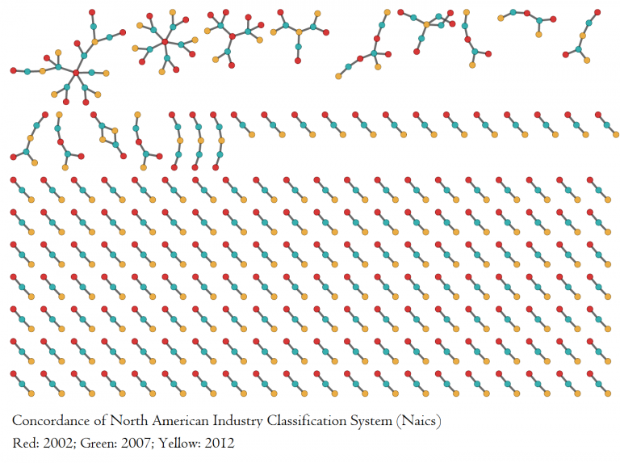
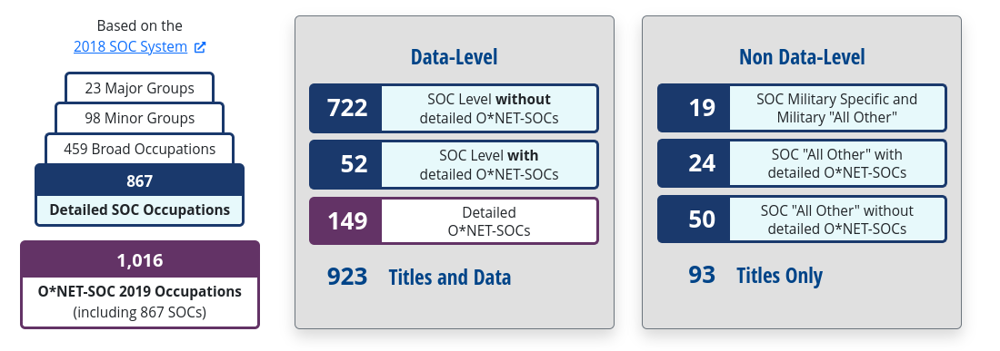
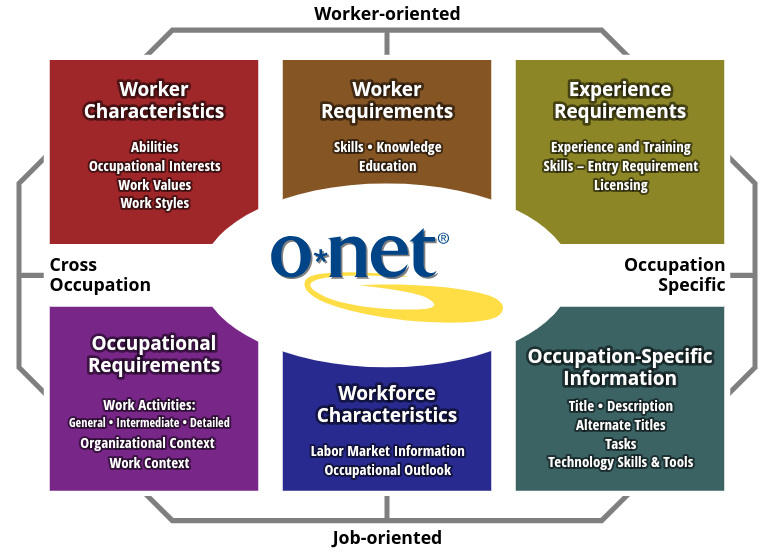

Análisis de complejidad del Proyecto InvESt-Tec Monterrey
Esta documentación presenta la metodología técnica del análisis para la identificación de industrias estratégicas en el margen extensivo del Proyecto InvESt-Tec Monterrey.
Contenido
El materíal está organizado de la siguiente manera:
- Medidas de Complejidad
- Uso de datos de empleo en el margen extensivo
- Industrias transables
- Proceso de identificación de industrias clave
- Cálculo de Factores de Viabilidad
- Regresiones para Crecimiento del RCA, Apariciones y Desapariciones
Uso de datos de empleo en el margen extensivo
Los datos de comercio internacional que se utilizan para el análisis del margen intensivo carecen de registros correspondientes a actividades de servicios. Dada la importancia del sector servicios en las economías, para el análisis del margen extensivo (esto es, identificación de industrias con una capacidad promisoria de desarrollo) se utilizaron datos de empleo de México y El Salvador para realizar el análisis de complejidad al comparar Zonas Metropolitanas de México con El Salvador.
Los datos de empleo de México provienen de los informes mensuales del Instituto Mexicano del Seguro Social (IMSS), los cuales son publicados desde 1997. Los datos de empleo de El Salvador corresponden al Instituto Salvadoreño de Seguridad Social, y tienen una frecuencia mensual y cubre el periodo 2013-2023. Desde el punto metodológico, ambos datos son comparables dado que provienen de registros administrativos.
Un primer reto para realizar el análisis de complejidad en el margen extensivo fue contar con un sistema de clasificación industrial harmonizado para ambos países. Los datos de empleo de El Salvador están registrados con la Clasificación Industrial Internacional Uniforme en su versión 4 (CIIU Rev 4) para 4 dígitos de agregación. Para el caso de México, el IMSS utiliza una clasificación propia. Para hacer comparable la clasificación IMSS con CIIU, se realizó en primer lugar una correspondencia de la clasificación del IMSS con el Sistema de Clasificación Industrial para América del Norte (SCIAN) en su versión 2018 a nivel de clase de actividad. Posteriormente, se utilizó el diccionario entre las clasificaciones SCIAN 2018 y CIIU Rev 4. Cabe señalar que dicho diccionario entre SCIAN 2018 y CIIU Rev 4 tuvo que ser ajustado con una metodología de clusterización en redes complejas. Este ajuste fue necesario dado que hay una relación muchos a muchos entre las actividades. El ajuste permitió eliminar las ambiguedades entre actividades y así obtener una relación uno a uno entre las activades CIIU Rev 4 y las activades SCIAN. Lo anterior significó generar una clasificación propia del CIIU Rev 4 donde se realizó una agrupación de actividades.
Metodología de Diodato para armonizar Sistemas de Clasificación
El problema entre sistemas de clasificación consiste en que en frecuentes ocasiones existen relaciones muchos a muchos entre las categorias de los sistemas de clasificación. Esto es, una actividad de un sistema puede corresponder a más de una actividad en otro sistema de clasificación. Si se usan las tablas de correspondencia que ofrecen los institutos de estadística son ningún tratamiento previo para controlar estas relaciones muchos a muchos puede significar la doble contabilidad de actividades, lo cual se traduce en una doble contabilización de la actividad. Por lo anterior, es preciso realizar un tratamiento previo a los diccionarios de correspondencias entre sistemas de clasificación para obtener relaciones uno a uno entre las actividades.
Dario Diodato presenta una metología basada en redes para armonizar sistemas de clasificación. A grandes rasgos, la propuesta consiste en construir una red no dirigida a partir de los diccionarios de correspondencias entre las actividades para posteriormente ejecutar algún algoritmo de cluster en redes para generar así relaciones uno a uno entre las actividades. La siguiente figura presenta un ejemplo de correspondencias entre actividades para tres sistemas de clasificación industrial. Los colores de los nodos corresponden a los sistemas de clasificación mientras que las aristas son las relaciones definidas en las correspondencias. Las relaciones muchos a muchos se manifiestan en los componentes conexos más grandes de la red.

Para el presente estudio, se armonizaron tres sistemas de clasificación : NAICS 2017, CIIU Rev 4 y SCIAN 2018. En la siguiente liga se presentan los programas que generan la nueva clasificación CIIU Rev 4 que armoniza los tres sistemas de clasificación.
La siguiente tabla presenta en extenso la nueva clasificación CIIU Rev 4 con sus correspondencias con SCIAN 2018, NAICS 2017, así como las actividades CIIU que está agrupando.
| CIIU (recodificación) | Actividades CIIU agrupadas | CIIU nombre | NAICS 2017 | SCIAN 2018 |
|---|---|---|---|---|
| 01-X01 | 0122,0127 | Cultivo de frutas tropicales y subtropicales (cultivo de plátano)/-/Cultivo de plantas con las que se preparan bebidas (cultivo de café) | 111339 | 111332,111337,111331,111333,111334,111991 |
| 01-X02 | 0125,0126 | Cultivo de otros frutos y nueces de árboles y arbustos (cultivo de mora, fresa, kiwi, nueces, piñón, avellana, y otros frutales no cítricos n.c.p.*)/-/Cultivo de frutos oleaginosos (cultivo de coco) | 111335,111334,111333 | 111412,111413,111338,111339 |
| 01-X03 | 0150,0143 | Cultivo de productos agrícolas en combinación con la cría de animales (explotación mixta) (actividades agrícolas combinadas con explotación de animales)/-/Cría de camellos y otros camélidos | 112990 | 111995,111993,112991,111994 |
| 01-X04 | 0129,0130 | Cultivo de otras plantas perennes (cultivo de árboles de ciclo productivo de 10 años o menos)/-/Propagación de plantas (producción de plántulas y plantitas de hortalizas en almácigos en invernaderos y otras estructuras agrícolas protegidas) | 111421 | 111429,111419,111423,111999 |
| 01-X05 | 0163,0164 | Actividades poscosecha (despepite de algodón)/-/Tratamiento de semillas para propagación | 115111,115114 | 115113,115112 |
| 0111 | 0111 | Cultivo de cereales (excepto arroz), leguminosas y semillas oleaginosas (cultivo de soya) | 111150,111120,111140,111110,111998,111199,111130,111191,111992 | 111131,111132,111191,111110,111121,111129,111992,111139,111140,111199,111194,111152,111195,111122,111192,111151,111193 |
| 0112 | 0112 | Cultivo de arroz | 111160 | 111160 |
| 0113 | 0113 | Cultivo de hortalizas y melones, raíces y tubérculos (cultivo de jitomate o tomate rojo) | 111411,111211,111991 | 111215,111216,111217,111416,111213,111214,111218,111411,111211 |
| 0114 | 0114 | Cultivo de caña de azúcar | 111930 | 111930 |
| 0115 | 0115 | Cultivo de tabaco | 111910 | 111910 |
| 0116 | 0116 | Cultivo de plantas para fibras textiles (cultivo de algodón) | 111920 | 111920 |
| 0119 | 0119 | Cultivo de otros productos agrícolas no perennes (cultivo de maíz tierno) | 111219,111422,111940 | 111941,111942,111219,111421,111422 |
| 0121 | 0121 | Cultivo de uva | 111332 | 111335 |
| 0123 | 0123 | Cultivo de cítricos (cultivo de naranja) | 111320,111310 | 111329,111321,111310 |
| 0124 | 0124 | Cultivo de frutas de pepita y de hueso (cultivo de manzana) | 111331 | 111336,111415 |
| 0128 | 0128 | Cultivo de especias y de plantas aromáticas, medicinales y farmacéuticas (cultivo de chile) | 111419 | 111414,111212 |
| 0141 | 0141 | Cría de ganado bovino y búfalos (explotación de bovinos para la producción de carne) | 112111,112120,112130,112112 | 112110,112131,112120,112139 |
| 0142 | 0142 | Cría de caballos y otros équidos | 112920 | 112920 |
| 0144 | 0144 | Cría de ovejas y cabras (explotación de ovinos) | 112410,112420 | 112410,112420 |
| 0145 | 0145 | Cría de cerdos (explotación de porcinos en granja) | 112210 | 112211,112212 |
| 0146 | 0146 | Cría de aves de corral (explotación de gallinas para la producción de huevo fértil) | 112310,112390,112330,112320,112340 | 112330,112320,112312,112340,112311 |
| 0149 | 0149 | Cría de otros animales (explotación de avestruces, codornices, faisanes, palomas y emúes, y otras aves para la producción de carne y huevo n.c.p.*) | 112910,112930 | 112930,112910,112390,112999 |
| 0161 | 0161 | Actividades de apoyo a la agricultura (servicios de fumigación agrícola) | 115115,115116,115112,115113 | 115111,115119 |
| 0162 | 0162 | Actividades de apoyo a la ganadería | 115210 | 115210 |
| 0170 | 0170 | Caza ordinaria y mediante trampas y actividades de servicios conexas | 114210 | 114210 |
| 02-X01 | 0210,0230 | Silvicultura y otras actividades forestales (silvicultura)/-/Recolección de productos forestales distintos de la madera (recolección de savia de maple) | 113210,113110 | 113211,113110 |
| 0220 | 0220 | Tala de árboles (recolección de leña) | 113310 | 113212 |
| 0240 | 0240 | Servicios de apoyo a la silvicultura (servicios relacionados con el aprovechamiento forestal) | 115310 | 115310 |
| 03-X01 | 1020,0311,0312 | Elaboración y conservación de pescado, crustáceos y moluscos /-/Pesca marítima (pesca de camarón en alta mar)/-/Pesca de agua dulce (pesca de camarón en agua dulce) | 114119,114112,311710,114111 | 114119,114113,114111,311710,114112 |
| 03-X02 | 0322,0321 | Acuicultura de agua dulce (camaronicultura en agua dulce)/-/Acuicultura marina (camaronicultura en alta mar) | 112511,112519,112512 | 112511,112512 |
| 0510 | 0510 | Extracción de hulla | 212113 | |
| 0520 | 0520 | Extracción de lignito | 212111,212112 | 212110 |
| 06-X01 | 0620,0610 | Extracción de gas natural (extracción de gas natural asociado)/-/Extracción de petróleo crudo (extracción de petróleo crudo asociado) | 211130,211120 | 211111,211112 |
| 0710 | 0710 | Extracción de minerales de hierro | 212210 | 212210 |
| 0721 | 0721 | Extracción de minerales de uranio y torio | 212299 | 212293 |
| 0729 | 0729 | Extracción de otros minerales metalíferos no ferrosos (minería de oro) | 212291,212221,212222,212230 | 212221,212292,212222,212231,212299,212232,212291 |
| 08-X01 | 0893,1030,1079,1050 | Extracción de sal (minería de sal)/-/Elaboración y conservación de frutas, legumbres y hortalizas (elaboración de harina de papa)/-/Elaboración de otros productos alimenticios n.c.p. (elaboración de sopas congeladas)/-/Elaboración de productos lácteos (elaboración de leche líquida) | 311514,311513,311911,311991,311421,311512,311941,311942,311930,311423,311999,311520,311511,311920,311612,311411 | 311512,311613,311511,311922,311513,212391,311923,311999,311421,311411,311924,311930,311422,311940,311992,311993,311991,311921,311520 |
| 08-X02 | 0899,0810,0892 | Explotación de otras minas y canteras n.c.p. (minería de mica)/-/Extracción de piedra de cantera, arena y arcilla (minería de piedra caliza)/-/Extracción de turba | 212322,212399,212311,212319,212313,212321,212324,212325 | 212319,212312,212392,212399,212396,212329,212321,212325,212322,212323,212324 |
| 0891 | 0891 | Extracción de minerales para la fabricación de abonos y productos químicos (minería de marga) | 212392,212391,212393,212312 | 212394,212393,212395,212311,212398,212397 |
| 09-X01 | 4311,4312,0990 | Demolición /-/Preparación del terreno (remoción de minerales en escombreras y preparación de terreno para la minería)/-/Actividades de apoyo para otras actividades de explotación de minas y canteras (exploración o prospección minera exclusiva para campos petroleros y mineros en alguna de las fases necesarias para la explotación de yacimientos mineros, petroleros y de gas, y otros servicios de apoyo a la minería n.c.p.*) | 213114,237990,213115,213113,238910 | 213119,238910,237999 |
| 0910 | 0910 | Actividades de apoyo para la extracción de petróleo y gas natural (perforación de pozos petroleros y de gas) | 213111,488999,213112 | 213111 |
| 10-X01 | 1075,1074 | Elaboración de comidas y platos preparados (elaboración de guisos congelados)/-/Elaboración de macarrones, fideos, alcuzcuz y productos farináceos similares (elaboración de pastas congeladas) | 311412,311824,311422 | 311820,311412,311423 |
| 10-X02 | 1040,1062 | Elaboración de aceites y grasas de origen vegetal y animal (elaboración de aceites y grasas de origen vegetal excepto aceite de maíz)/-/Elaboración de almidones y productos derivados del almidón (elaboración de féculas y otros almidones y sus derivados) | 311224,311221,311225 | 311222,311221 |
| 1010 | 1010 | Elaboración y conservación de carne (elaboración de carnes congeladas preparadas) | 311613,311615,311611 | 311611,311612,311614 |
| 1061 | 1061 | Elaboración de productos de molienda (beneficio del arroz) | 311212,311230,311211 | 311212,311211,311230,311214,311213 |
| 1071 | 1071 | Elaboración de productos de panadería (panificación industrial) | 311812,311813,311919,311830,311811,311821 | 311910,311811,311830,311813,311812 |
| 1072 | 1072 | Elaboración de azúcar (elaboración de azúcar de caña) | 311313,311314 | 311319,311311 |
| 1073 | 1073 | Elaboración de cacao y chocolate y de productos de confitería (elaboración de chicles, bombones, chiclosos, caramelos macizos, fruta cristalizada, confitada y glaseada) | 311352,311340,311351 | 311340,311350 |
| 1080 | 1080 | Elaboración de alimentos preparados para animales | 311111,311119 | 311110 |
| 1101 | 1101 | Destilación, rectificación y mezcla de bebidas alcohólicas (elaboración de bebidas alcohólicas a base de uva) | 312140 | 312141,312131,312142,312149 |
| 1102 | 1102 | Elaboración de vinos (elaboración de pulque) | 312130 | 312132,312139 |
| 1103 | 1103 | Elaboración de malta y licores de malta (elaboración de malta) | 312120,311213 | 312120,311215 |
| 1104 | 1104 | Elaboración de bebidas no alcohólicas; producción de aguas minerales y otras aguas embotelladas (elaboración de refrescos y otras bebidas no alcohólicas) | 312111,312112 | 312111,312112 |
| 1200 | 1200 | Elaboración de productos de tabaco (beneficio del tabaco) | 312230 | 312221,312210,312222 |
| 1311 | 1311 | Preparación e hilatura de fibras textiles (preparación e hilado de fibras duras naturales, como henequén, ixtle y palma) | 313110,314999 | 313113,313112 |
| 1312 | 1312 | Tejedura de productos textiles | 313210 | 313210 |
| 1313 | 1313 | Acabado de productos textiles (acabado de productos textiles) | 561990,313310 | 313310,314991 |
| 1391 | 1391 | Fabricación de tejidos de punto y ganchillo | 313240 | |
| 1392 | 1392 | Fabricación de artículos confeccionados de materiales textiles, excepto prendas de vestir (tejido de manteles, colchas y carpetas de tejido de punto) | 337920 | 314912,314993,314911 |
| 1393 | 1393 | Fabricación de tapices y alfombras (fabricación de alfombras y tapetes) | 314110 | 314110 |
| 1394 | 1394 | Fabricación de cuerdas, cordeles, bramantes y redes | 314994 | |
| 1399 | 1399 | Fabricación de otros productos textiles n.c.p. (fabricación de telas angostas de tejido de trama y pasamanería) | 313220,339991,313230 | 313220,313230,313240,314992 |
| 14-X01 | 1410,1420 | Fabricación de prendas de vestir, excepto prendas de piel (fabricación de pañales de tela)/-/Fabricación de artículos de piel (confección de prendas de vestir de piel) | 315220,315210,315240,315990,339999,315280 | 315221,315210,315224,315999,315222,315223,315229,315991,315225,314999 |
| 1430 | 1430 | Fabricación de artículos de punto y ganchillo (fabricación de calcetines y medias de tejido de punto) | 315110,315190 | 315192,315191,315110 |
| 1511 | 1511 | Curtido y adobo de cueros; adobo y teñido de pieles | 316110 | 316110 |
| 1512 | 1512 | Fabricación de maletas, bolsos de mano y artículos similares, y de artículos de talabartería y guarnicionería (fabricación de bolsos de mano, maletas y similares) | 316992 | 316991 |
| 1520 | 1520 | Fabricación de calzado (fabricación de calzado con corte de piel y cuero) | 316998,316210 | 316213,316211,316219,316212,316214,316999 |
| 1610 | 1610 | Aserrado y acepilladura de madera (producción de trozas, astillas y rajas de madera) | 321999,321114 | 113310,321112,321113 |
| 1621 | 1621 | Fabricación de hojas de madera para enchapado y tableros a base de madera (fabricación de laminados y aglutinados de madera en aserraderos integrados) | 321212,321219,321211 | |
| 1622 | 1622 | Fabricación de partes y piezas de carpintería para edificios y construcciones (fabricación de productos de madera para la construcción en aserraderos integrados) | 321113,321992,321918,337215,321214,321213,321911,321991 | 321910,321210 |
| 1623 | 1623 | Fabricación de recipientes de madera (fabricación de contenedores de madera en aserraderos integrados) | 321920 | 321993 |
| 1629 | 1629 | Fabricación de otros productos de madera; fabricación de artículos de corcho, paja y materiales trenzables (tejido de tapetes, petates, cestos, canastos, sombreros, bolsos de mano, cuerdas, costales y artículos decorativos de palma y de fibras duras similares preparadas compradas) | 321912,339950 | 321111,321992,321991,321999,313111,321920 |
| 17-X01 | 1702,1701,1709 | Fabricación de papel y cartón ondulado y de envases de papel y cartón (fabricación de envases de papel en plantas integradas)/-/Fabricación de pasta de madera, papel y cartón (fabricación de pulpa)/-/Fabricación de otros artículos de papel y cartón (fabricación de productos de papel en plantas integradas) | 322230,322130,322110,322122,322219,322121,332992,322211,322291,322212,322299,322220 | 322230,322121,322131,322291,322220,322122,322210,322299,322110,322132 |
| 1811 | 1811 | Impresión (impresión de libros, periódicos y revistas) | 323117,323113 | 323111 |
| 1812 | 1812 | Actividades de servicios relacionadas con la impresión | 323120 | 323120 |
| 1820 | 1820 | Reproducción de grabaciones | 334614 | |
| 1910 | 1910 | Fabricación de productos de hornos de coque (fabricación de coque, briquetas de carbón y de otros productos derivados del petróleo refinado y del carbón mineral n.c.p.*) | 325194 | 324199 |
| 1920 | 1920 | Fabricación de productos de la refinación del petróleo (refinación de petróleo) | 325110,324199,324191,324110 | 324110,324191 |
| 2011 | 2011 | Fabricación de sustancias químicas básicas (obtención de alcohol etílico potable) | 325193,325998,325130,325120 | 325110,312143,325130,325120 |
| 2012 | 2012 | Fabricación de abonos y compuestos de nitrógeno (fabricación de cloruro amónico) | 325311,325314,325312,325180 | 325310,325180 |
| 2013 | 2013 | Fabricación de plásticos y caucho sintético en formas primarias (fabricación de resinas sintéticas) | 325212,325211,325991 | 325211,325212,325993 |
| 2021 | 2021 | Fabricación de plaguicidas y otros productos químicos de uso agropecuario (fabricación de pesticidas y otros agroquímicos, excepto fertilizantes) | 325320 | 325320 |
| 2022 | 2022 | Fabricación de pinturas, barnices y productos de revestimiento similares, tintas de imprenta y masillas (fabricación de pigmentos naturales para pieles) | 325910,325510 | 325510,325910 |
| 2023 | 2023 | Fabricación de jabones y detergentes, preparados para limpiar y pulir, perfumes y preparados de tocador (fabricación de jabones, detergentes, suavizantes de telas, ceras, aromatizantes de ambiente, limpiadores dentífricos y pulidores) | 332999,325620,325611 | 325620 |
| 2029 | 2029 | Fabricación de otros productos químicos n.c.p. (fabricación de materiales sintéticos para perfumes y cosméticos) | 332993,325920,325520,325613,325612 | 325991,325920,325520,325610,325992 |
| 2030 | 2030 | Fabricación de fibras artificiales | 325220 | |
| 2100 | 2100 | Fabricación de productos farmacéuticos, sustancias químicas medicinales y productos botánicos de uso farmacéutico (fabricación de ácido salicílico no medicinal) | 325411,325412,325414,339113,325413,325199 | 325412,325411,325190 |
| 2211 | 2211 | Fabricación de llantas y tubos de hule, reconstrucción y revitalizado de llantas de hule | 326212 | 326212 |
| 2219 | 2219 | Fabricación de otros productos de caucho (fabricación de telas recubiertas con hule) | 326211,313320,326291 | 326211,313320 |
| 2220 | 2220 | Fabricación de productos de plástico (confección de cortinas de plástico) | 326112,326130,326122,326220,326150,326113,332913,314910,326160,326111,326121,326191,314120,326140 | 326160,326192,326140,326191,326220,326193,326150,326130,326110,314120,325220,326120,326199 |
| 23-X01 | 2393,2392 | Fabricación de otros productos de porcelana y de cerámica /-/Fabricación de materiales de construcción de arcilla (fabricación de muebles de baño) | 327110 | 327112,327122,327111 |
| 2310 | 2310 | Fabricación de vidrio y productos de vidrio (fabricación de vidrio) | 327993,327212,327213,327211,327215 | 327211,327216,327219,327212,327215,327213,327214 |
| 2391 | 2391 | Fabricación de productos refractarios | 327120 | 327123 |
| 2394 | 2394 | Fabricación de cemento, cal y yeso (fabricación de cemento) | 327410,327420,327310 | 327410 |
| 2395 | 2395 | Fabricación de artículos de hormigón, cemento y yeso (fabricación de ladrillos de adobe) | 327320,327999,327331,327390,327332 | 327320,327310,327420,327399,327391,327121,327330 |
| 2396 | 2396 | Corte, talla y acabado de la piedra | 453998,327991 | 327991 |
| 2399 | 2399 | Fabricación de otros productos minerales no metálicos n.c.p. (fabricación de papel alquitranado) | 324121,324122,327910,336350,327992 | 324120,335991,327910 |
| 2410 | 2410 | Industrias básicas de hierro y acero (complejos siderúrgicos) | 331110,332996,331221 | 331111,331112 |
| 2420 | 2420 | Fabricación de metales preciosos básicos y de otros metales no ferrosos (fabricación de papel metalizado) | 331410,331313,331315,331314,331492 | 331419,331412,331411 |
| 2431 | 2431 | Fundición de hierro y acero (fabricación de tubos y postes de hierro y acero) | 331512,331210,331513 | 331210 |
| 2432 | 2432 | Fundición de metales no ferrosos | 331524,331523,331529 | 331520 |
| 25-X01 | 2593,2824,2813,2930,2910,2818,2816,2821,3099 | Fabricación de artículos de cuchillería, herramientas de mano y artículos de ferretería (fabricación de herramientas de mano sin motor)/-/Fabricación de maquinaria para la explotación de minas y canteras y para obras de construcción (fabricación de tractores de oruga, máquinas para movimiento de tierra, bulldozers y mezcladoras de concreto)/-/Fabricación de otras bombas, compresores, grifos y válvulas (fabricación de grifos y válvulas industriales)/-/Fabricación de partes, piezas y accesorios para vehículos automotores (fabricación de quinta rueda)/-/Fabricación de vehículos automotores (fabricación de motores diésel)/-/Fabricación de herramientas de mano motorizadas (fabricación de equipo con motor para la jardinería)/-/Fabricación de equipo de elevación y manipulación (fabricación de gatos mecánicos)/-/Fabricación de maquinaria agropecuaria y forestal (fabricación de podadoras de pasto sin motor)/-/Fabricación de otros tipos de equipo de transporte n.c.p. (fabricación de carritos de alambre para supermercado) | 332216,333991,336111,332911,333131,333515,336390,333914,331222,336213,333243,333132,336340,336999,336330,333111,332510,336112,333921,336211,336120,333922,333511,336310,333120,336320,333112,333924 | 336310,336120,336510,333130,336350,332610,336210,336330,336999,332510,333111,336340,336110,336390,336320,332211,333112,333120 |
| 25-X02 | 2592,3212,3211 | Tratamiento y revestimiento de metales; maquinado (maquinado de piezas para maquinaria y equipo en general)/-/Fabricación de bisutería y artículos conexos (joyería de metales y piedras no preciosos y de otros materiales)/-/Fabricación de joyas y artículos conexos (fabricación de piedras preciosas, semipreciosas y sintéticas para joyería) | 332812,332710,332811,339910,332813 | 332810,339913,327999,339912,339911,339914,332710 |
| 25-X03 | 2512,2920 | Fabricación de tanques, depósitos y recipientes de metal (fabricación de tanques metálicos de calibre grueso)/-/Fabricación de carrocerías para vehículos automotores; fabricación de remolques y semirremolques (fabricación de remolques y semirremolques para usos diversos, campers y casetas) | 336212,332439,811121,332420,336214 | 811123 |
| 2511 | 2511 | Fabricación de productos metálicos para uso estructural (fabricación de estructuras metálicas para la construcción) | 332323,332321,332311 | |
| 2513 | 2513 | Fabricación de generadores de vapor, excepto calderas de agua caliente para calefacción central | 332410 | |
| 2520 | 2520 | Fabricación de armas y municiones | 332994 | |
| 2591 | 2591 | Forja, prensado, estampado y laminado de metales; pulvimetalurgia (fabricación de productos forjados y estampados, y de productos mediante pulvimetalurgia) | 332117,332112,332114,332111,336370 | 336370 |
| 2599 | 2599 | Fabricación de otros productos elaborados de metal n.c.p. (fabricación de bolsas de papel aluminizado) | 332322,332431,332613,331491,332119,332721,332722 | 332430,332110,332212,332999,332720,337920,332320,331490 |
| 26-X01 | 2652,2651 | Fabricación de relojes (excepto fabricación de parquímetros)/-/Fabricación de equipo de medición, prueba, navegación y control (fabricación de básculas y balanzas de laboratorio y de uso industrial) | 334519,334511,334514,334515,334516,334513,334512 | 334511,334519 |
| 26-X02 | 2640,3230,3240 | Fabricación de aparatos electrónicos de consumo (fabricación de equipo de audio y de video)/-/Fabricación de artículos de deporte /-/Fabricación de juegos y juguetes (fabricación de mesas de billar) | 339920,334310,339930 | 334310,339920,339930 |
| 2610 | 2610 | Fabricación de componentes y tableros electrónicos | 334413,334416,334418,334417,334419,334412 | 334410 |
| 2620 | 2620 | Fabricación de ordenadores (computadoras) y equipo periférico | 334112,334111,334118 | 334110 |
| 2630 | 2630 | Fabricación de equipo de comunicaciones (fabricación de equipo telefónico) | 334290,334210 | 334210 |
| 2660 | 2660 | Fabricación de equipo de irradiación y equipo electrónico de uso médico y terapéutico | 334510,334517 | |
| 2670 | 2670 | Fabricación de instrumentos ópticos y equipo fotográfico (fabricación de aparatos fotográficos) | 333314,333316 | 333311 |
| 2680 | 2680 | Fabricación de soportes magnéticos y ópticos | 334613 | 334610 |
| 2710 | 2710 | Fabricación de motores, generadores y transformadores eléctricos y aparatos de distribución y control de la energía eléctrica (fabricación de transformadores para soldadura de arco) | 335314,335313,335312,335311 | 335311 |
| 2720 | 2720 | Fabricación de pilas, baterías y acumuladores (fabricación de partes de plástico para baterías y acumuladores) | 326299,335911,335912 | 335910,326290 |
| 2731 | 2731 | Fabricación de cables de fibra óptica | 335921 | |
| 2732 | 2732 | Fabricación de otros hilos y cables eléctricos (fabricación de cable de acero) | 331420,335929,331318 | 335920,331420,331310,331220 |
| 2733 | 2733 | Fabricación de dispositivos de cableado | 335932,335931 | 335930 |
| 2740 | 2740 | Fabricación de equipo eléctrico de iluminación (fabricación de focos) | 335110,335122,335121 | 335110 |
| 2750 | 2750 | Fabricación de aparatos de uso doméstico (fabricación de enseres electrodomésticos menores) | 335220,335210 | 335210,335220 |
| 2790 | 2790 | Fabricación de otros tipos de equipo eléctrico (fabricación de pistolas manuales para soldar) | 335999,335991,335129 | 335120,339950,333991,335312,335999 |
| 28-X01 | 2825,3290,2817,2826 | Fabricación de maquinaria para la elaboración de alimentos, bebidas y tabaco (fabricación de secadores de productos agrícolas)/-/Otras industrias manufactureras n.c.p. (fabricación de barredoras mecánicas industriales)/-/Fabricación de maquinaria y equipo de oficina [excepto ordenadores (computadoras) y equipo periférico] (fabricación y remanufactura de cartuchos de tóner)/-/Fabricación de maquinaria para la elaboración de productos textiles, prendas de vestir y cueros (fabricación de maquinaria para despepite de algodón) | 339995,332215,339993,333241,333318,325992,339994,332618,339940,711510 | 339111,339993,333319,333244,339995,339940,339994,339992,339999,333312 |
| 28-X02 | 2815,3250 | Fabricación de hornos, hogares y quemadores (fabricación de hornos para la industria del cemento)/-/Fabricación de instrumentos y materiales médicos y odontológicos (fabricación de equipo de destilación para laboratorio) | 339116,333414,333999,337127,333994,339112,339114,339115 | 333999,339113,337120,333249,339112 |
| 28-X03 | 2822,2823 | Fabricación de maquinaria para la conformación de metales y de máquinas herramienta (fabricación de maquinaria y equipo para la industria de la madera)/-/Fabricación de maquinaria metalúrgica (fundición de lingoteras) | 331511,333519,333514,333249,333517 | 331510,333510,333241 |
| 28-X04 | 2811,3092,3091 | Fabricación de motores y turbinas, excepto motores para aeronaves, vehículos automotores y motocicletas (fabricación de motores de combustión interna y de turbinas)/-/Fabricación de bicicletas y vehículos de transporte para personas con discapacidad física (fabricación de bicicletas y triciclos)/-/Fabricación de motocicletas (fabricación de motores para motocicletas) | 333618,336991,333611 | 333610,336992,336991 |
| 2812 | 2812 | Fabricación de equipo de propulsión de fluidos (fabricación de válvulas hidráulicas y neumáticas) | 333996,332912,333995 | |
| 2814 | 2814 | Fabricación de cojinetes, engranajes, trenes de engranajes y piezas de transmisión (fabricación de baleros y rodamientos) | 333612,333613,332991 | 332991 |
| 2819 | 2819 | Fabricación de otros tipos de maquinaria de uso general (fabricación de cintas métricas) | 333997,333912,333993,333413,332919,333992,333415 | 333992,333243,333910,332910,333411,332420,332410,333993,333412 |
| 2829 | 2829 | Fabricación de otros tipos de maquinaria de uso especial (fabricación de maquinaria y equipo para la industrias del hule y del plástico) | 333244,333242 | 333245,333242,333246 |
| 3011 | 3011 | Construcción de buques y estructuras flotantes (fabricación de estructuras metálicas flotantes) | 336611,332313 | 332310 |
| 3012 | 3012 | Construcción de embarcaciones de recreo y de deporte | 336612,332312 | |
| 3020 | 3020 | Fabricación de locomotoras y material rodante (fabricación de carritos para la minería) | 336510,333923 | 333920,334290 |
| 3030 | 3030 | Fabricación de aeronaves, naves espaciales y maquinaria conexa (fabricación de simuladores de vuelo) | 336419,336414,336360,336412,336413,336415,334220,336411 | 334220,336360,336410 |
| 3040 | 3040 | Fabricación de vehículos militares de combate | 336992 | |
| 3100 | 3100 | Fabricación de muebles (fabricación de partes para muebles de plástico sin reforzamiento) | 326199,337214,337121,337212,337211,337125,337110,337122,337910,337124 | 326198,337210,337910,337110,326194 |
| 3220 | 3220 | Fabricación de instrumentos de música | 339992 | 339991 |
| 33-X01 | 9512,9521,3313 | Reparación de equipo de comunicaciones /-/Reparación de aparatos electrónicos de consumo /-/Reparación de equipo electrónico y óptico (reparación de microscopios, equipo médico electrónico y equipo de precisión) | 443142,811213,811219,811211 | 811211,811219 |
| 33-X02 | 3311,3319,3314 | Reparación de productos elaborados de metal (reparación de calderas y tanques de metal)/-/Reparación de otros tipos de equipo (restauración de instrumentos musicales antiguos)/-/Reparación de equipo eléctrico | 811490,811310 | 811312 |
| 33-X03 | 4322,3320 | Instalaciones de fontanería, calefacción y aire acondicionado (instalaciones hidrosanitarias y de gas)/-/Instalación de maquinaria y equipo industriales (instalación de calderas industriales) | 238220 | 238222,238221 |
| 3312 | 3312 | Reparación de maquinaria (reparación de fotocopiadoras, máquinas de escribir, calculadoras, básculas y balanzas) | 811411 | 811311,811313 |
| 3315 | 3315 | Reparación de equipo de transporte, excepto vehículos automotores (reparación y mantenimiento de embarcaciones hechos por el establecimiento fabricante) | 488390 | 811314,336610,811493 |
| 3510 | 3510 | Generación, transmisión y distribución de energía eléctrica (generación de electricidad a partir de combustibles fósiles) | 221116,221118,221111,221117,221114,221115,221121,221113,221112,221122 | 221119,221113,221121,221111,221122,221114,221112,221123 |
| 3520 | 3520 | Fabricación de gas; distribución de combustibles gaseosos por tuberías | 221210 | |
| 3530 | 3530 | Suministro de vapor y de aire acondicionado (producción, captación y distribución de vapor por ductos) | 221330,312113 | 312113,221210 |
| 36-X01 | 4930,3600 | Transporte por tuberías (suministro de agua en pipas realizado por el sector privado)/-/Captación, tratamiento y distribución de agua (captación, tratamiento y suministro de agua realizados por el sector privado) | 221310,486910,486210,486990,486110 | 486910,486990,221311,486210,221312,486110 |
| 3700 | 3700 | Evacuación de aguas residuales (servicio de alcantarillado y tratamiento de aguas residuales realizado por el sector privado) | 562991,221320,562998 | 562999,562998 |
| 3811 | 3811 | Recolección de desechos no peligrosos (recolección de residuos no peligrosos por el sector privado) | 562111,562119 | |
| 3812 | 3812 | Recolección de desechos peligrosos (servicios de recolección de residuos peligrosos por el sector privado) | 562112 | 562112,562111 |
| 3821 | 3821 | Tratamiento y eliminación de desechos no peligrosos (tratamiento y disposición final de residuos no peligrosos por el sector privado) | 562219,562212,562213 | 562221,562222 |
| 3822 | 3822 | Tratamiento y eliminación de desechos peligrosos (tratamiento y disposición final de residuos peligrosos por el sector privado) | 562211 | 562212,562211 |
| 3830 | 3830 | Recuperación de materiales (recuperación de residuos por el sector privado) | 562920 | 562922,562921 |
| 3900 | 3900 | Actividades de remediación y otros servicios de gestión de desechos (servicios de remediación de residuos por el sector privado) | 562910 | 562912,562911 |
| 4100 | 4100 | Construcción de edificios (edificación de vivienda unifamiliar) | 236118,236220,236115,236117,236116 | 236111,236112 |
| 4210 | 4210 | Construcción de carreteras y vías de ferrocarril (construcción de carreteras, puentes y similares) | 238990 | 237993,237312 |
| 4220 | 4220 | Construcción de proyectos de servicio público (construcción de obras para el tratamiento, distribución y suministro de agua y drenaje) | 237130,237110 | 237112,237121,237111,237132,237131 |
| 4290 | 4290 | Construcción de otras obras de ingeniería civil (construcción de plantas químicas) | 237120,237210 | 237992,237991,236221,237211,237212,237122 |
| 4321 | 4321 | Instalaciones eléctricas (instalación de señalamientos y protecciones en obras viales) | 238210,237310 | 238210,237311 |
| 4329 | 4329 | Otras instalaciones para obras de construcción (instalación de equipos para sistemas de aire acondicionado y de calefacción) | 238310 | 238290 |
| 4330 | 4330 | Terminación y acabado de edificios (trabajos de albañilería) | 238320,238390,238330,238340,238350,238150 | 238311,238312,238350,238190,238340,238320,238130,238330 |
| 4390 | 4390 | Otras actividades especializadas de construcción (construcción de hornos industriales) | 238110,238120,238190,238130,238170,236210,238160,238140,561790 | 238110,238121,238390,236211,238122,238990 |
| 45-X01 | 4540,4530 | Venta, mantenimiento y reparación de motocicletas y sus partes, piezas y accesorios (comercio al por menor de motocicletas)/-/Venta de partes, piezas y accesorios para vehículos automotores (comercio al por mayor de partes y refacciones nuevas para automóviles, camionetas y camiones) | 423140,423110,425110,452319,423130,425120,423120,441210,441320 | 811492,468311,436112 |
| 4510 | 4510 | Venta de vehículos automotores (comercio al por mayor de camiones) | 441120,441228,441110 | 468319,468111,436111,468112 |
| 4520 | 4520 | Mantenimiento y reparación de vehículos automotores (reparación mecánica en general de automóviles y camiones) | 811192,811191,811112,811122,811118,811198,811113,811111 | 811191,811116,811114,811119,811111,811192,811113,811121,811129,811122,811115,811112 |
| 4610 | 4610 | Venta al por mayor a cambio de una retribución o por contrato (intermediación de comercio al por mayor de productos agropecuarios, excepto a través de internet y de otros medios electrónicos) | 437210,437111,437112,437113 | |
| 4620 | 4620 | Venta al por mayor de materias primas agropecuarias y animales vivos (comercio al por mayor de tabaco sin procesar) | 424520,424930,424990,424510 | 434228,432113 |
| 4630 | 4630 | Venta al por mayor de alimentos, bebidas y tabaco (comercio al por mayor de abarrotes) | 424940,424590,424480,424820,424430,424810,424420,424460,424440,424450,424410,424470 | 431193,431213,431199,431130,431192,431123,431170,431180,431191,431212,431110,431160,431121,431122,431140,431220,431211,431194,431150 |
| 4641 | 4641 | Venta al por mayor de productos textiles, prendas de vestir y calzado (comercio al por mayor de fibras, hilos y telas) | 424340,424310,424320,424330 | 432112,432130,432120,432111,432119 |
| 4649 | 4649 | Venta al por mayor de otros enseres domésticos (comercio al por mayor de productos farmacéuticos) | 423460,424920,424210,424120,423920,423620 | 433220,433312,434240,433410,433420,433430,433313,433110,433510,433210 |
| 4651 | 4651 | Venta al por mayor de ordenadores (computadoras), equipo periférico y programas de informática | 423430 | |
| 4652 | 4652 | Venta al por mayor de equipo, partes y piezas electrónicos y de telecomunicaciones (comercio al por mayor de cintas y videos sin grabar) | 423690 | 435411,433311 |
| 4653 | 4653 | Venta al por mayor de maquinaria, equipo y materiales agropecuarios | 423820 | 435110 |
| 4659 | 4659 | Venta al por mayor de otros tipos de maquinaria y equipo (comercio al por mayor de equipo y material eléctrico) | 423810,423850,423440,423450,423420,423860,423740,423210,423490,423410,423610 | 434225,435311,435312,435210,435313,435220,435319,435412 |
| 4661 | 4661 | Venta al por mayor de combustibles sólidos, líquidos y gaseosos y productos conexos (comercio al por mayor de combustibles de uso industrial) | 424710,424720 | 468419,434230 |
| 4662 | 4662 | Venta al por mayor de metales y minerales metalíferos | 423510,423520 | 434221 |
| 4663 | 4663 | Venta al por mayor de materiales de construcción, artículos de ferretería y equipo y materiales de fontanería y calefacción (comercio al por mayor de cemento, tabique y grava) | 423390,423730,423910,424950,423830,423330,423220,423310,423720,423320,423710 | 434224,434211,434219,434229,435419,434226,434227 |
| 4669 | 4669 | Venta al por mayor de desperdicios, desechos y chatarra y otros productos n.c.p. (comercio al por mayor de fertilizantes y plaguicidas agrícolas) | 424130,424110,423930,424910,423840,423940,424690,424490,424610 | 434222,434319,434312,434112,434314,434311,434111,434313,434223 |
| 47-X01 | 4722,4782,4741,4789,4781,4759,4721,4751,4762,4771,4764 | Venta al por menor de bebidas en comercios especializados (comercio al por menor de vinos y licores en comercios especializados)/-/Venta al por menor de productos textiles, prendas de vestir y calzado en puestos de venta y mercados (comercio al por menor de telas en puestos de venta y mercados)/-/Venta al por menor de ordenadores (computadoras), equipo periférico, programas de informática y equipo de telecomunicaciones en comercios especializados (comercio al por menor de computadoras y sus accesorios en comercios especializados)/-/Venta al por menor de otros productos en puestos de venta y mercados (comercio al por menor de lentes en puestos de venta y mercados)/-/Venta al por menor de alimentos, bebidas y tabaco en puestos de venta y mercados (comercio al por menor de carnes rojas en puestos de venta y mercados)/-/Venta al por menor de aparatos eléctricos de uso doméstico, muebles, equipo de iluminación y otros enseres domésticos en comercios especializados (comercio al por menor de instrumentos musicales en comercios especializados)/-/Venta al por menor de alimentos en comercios especializados (comercio al por menor de carnes rojas en comercios especializados)/-/Venta al por menor de productos textiles en comercios especializados (comercio al por menor de telas en comercios especializados)/-/Venta al por menor de grabaciones de música y de video en comercios especializados /-/Venta al por menor de prendas de vestir, calzado y artículos de cuero en comercios especializados (comercio al por menor de blancos en comercios especializados)/-/Venta al por menor de juegos y juguetes en comercios especializados (comercio al por menor de juguetes en comercios especializados) | 445299,448140,448130,448210,448110,451130,448120,446191,445220,445292,445230,445310,454390,442110,451120,448190,445210,445291,444190 | 461160,461213,463217,467115,465313,466114,463112,461130,465112,465214,467114,466314,465111,465913,465912,466211,461220,467113,466111,466312,463215,465216,463218,463213,465211,463212,461212,461170,464113,464121,463111,465311,463214,468212,461122,466212,463113,461150,463310,465213,463216,461190,465215,461211,466410,461123,465914,468211,466319,463211,466311,466112,468213,465212,461140,466313,465312,461121,466113 |
| 4711 | 4711 | Venta al por menor en comercios no especializados con predominio de la venta de alimentos, bebidas o tabaco (comercio al por menor en tiendas de abarrotes, ultramarinos y misceláneas) | 445120,445110,452311 | 462112,461110,462111 |
| 4719 | 4719 | Otras actividades de venta al por menor en comercios no especializados (comercio al por menor en tiendas departamentales) | 452210 | 462210,464112 |
| 4723 | 4723 | Venta al por menor de productos de tabaco en comercios especializados | 453991 | |
| 4730 | 4730 | Venta al por menor de combustibles para vehículos automotores en comercios especializados (comercio al por menor de gasolina y diésel) | 447190,447110 | 468414,468413,468411 |
| 4742 | 4742 | Venta al por menor de equipo de sonido y de video en comercios especializados | 441310 | |
| 4752 | 4752 | Venta al por menor de artículos de ferretería, pinturas y productos de vidrio en comercios especializados (comercio al por menor en ferreterías y tlapalerías) | 444130,444210,444110 | 467112,467111,467117,467116 |
| 4753 | 4753 | Venta al por menor de tapices, alfombras y cubrimientos para paredes y pisos en comercios especializados | 444120,442210,442291 | |
| 4761 | 4761 | Venta al por menor de libros, periódicos y artículos de papelería en comercios especializados (comercio al por menor de artículos de papelería en comercios especializados) | 451212,451211,453210 | |
| 4763 | 4763 | Venta al por menor de equipo de deporte en comercios especializados | 441222,451110 | |
| 4772 | 4772 | Venta al por menor de productos farmacéuticos y médicos, cosméticos y artículos de tocador en comercios especializados (farmacias sin minisúper) | 446199,446110,446120 | 464122,464111 |
| 4773 | 4773 | Venta al por menor de otros productos nuevos en comercios especializados (comercio al por menor de lentes en comercios especializados) | 446130,453920,453110,453220,453930,444220,442299,453910,448150 | 465915,465919 |
| 4774 | 4774 | Venta al por menor de artículos de segunda mano | 453310 | |
| 4791 | 4791 | Venta al por menor por correo y por Internet | 454110 | |
| 4799 | 4799 | Otras actividades de venta al por menor no realizadas en comercios, puestos de venta o mercados (comercio al por menor de mascotas en puestos de venta o mercados) | 454210,454310 | 469110,468412,468420,465911 |
| 49-X01 | 4911,4912 | Transporte interurbano de pasajeros por ferrocarril (transporte de pasajeros por ferrocarril)/-/Transporte de carga por ferrocarril | 482111,482112 | 482110 |
| 4921 | 4921 | Transporte urbano y suburbano de pasajeros por vía terrestre (transporte colectivo urbano y suburbano de pasajeros en autobuses de ruta fija) | 485111,485113,485112,485119 | 485115,485113,485114,485112,485111 |
| 4922 | 4922 | Otras actividades de transporte por vía terrestre (transporte colectivo foráneo de pasajeros de ruta fija) | 487110,485310,485991,485210,485410,485320,485999,713920,485510 | 485990,485410,485320,485510,485210,485312,487110,485311 |
| 4923 | 4923 | Transporte de carga por carretera (autotransporte local de productos agrícolas sin refrigeración) | 484122,484220,484110,484121,484230,484210 | 484234,484121,484210,484233,484222,484224,484239,484231,484221,484129,484232,484119,484223,484111,484229 |
| 5011 | 5011 | Transporte de pasajeros marítimo y de cabotaje (transporte marítimo de altura de pasajeros) | 483114,483112,487210 | |
| 5012 | 5012 | Transporte de carga marítimo y de cabotaje (transporte marítimo de altura de carga) | 483113,483111 | 483113,483112,483111 |
| 5021 | 5021 | Transporte de pasajeros por vías de navegación interiores (transporte de pasajeros por aguas interiores) | 483212 | 487210 |
| 5022 | 5022 | Transporte de carga por vías de navegación interiores | 483211 | 483210 |
| 5110 | 5110 | Transporte de pasajeros por vía aérea (transporte aéreo de pasajeros con horario regular en líneas aéreas nacionales) | 481111,487990,481211,481219 | 487990 |
| 5120 | 5120 | Transporte de carga por vía aérea (transporte aéreo de carga con horario regular en líneas aéreas nacionales) | 481112,481212,927110 | 481111,481210,481112 |
| 52-X01 | 5224,8129 | Manipulación de la carga (servicio de carga y descarga de mercancías y equipaje para el transporte aéreo)/-/Otras actividades de limpieza de edificios y de instalaciones industriales (mantenimiento de calderas de sistemas de aire acondicionado) | 488320,488490,488119,488210,561710 | 561720,562121,488210,562122,488320,488390,488112,488492,561790,561710 |
| 5210 | 5210 | Almacenamiento y depósito (almacenes generales de depósito) | 493120,493110,493130,493190 | 493119,493111,493120,493130,493190 |
| 5221 | 5221 | Actividades de servicios vinculadas al transporte terrestre (administración de estaciones y terminales de ferrocarril y derechos de paso de vías) | 812930,488410 | 488491,488410 |
| 5222 | 5222 | Actividades de servicios vinculadas al transporte acuático (administración de puertos y muelles) | 488330,488310 | 488330,488310 |
| 5223 | 5223 | Actividades de servicios vinculadas al transporte aéreo (servicios a la navegación aérea) | 488190,488111 | 488111,488190 |
| 5229 | 5229 | Otras actividades de apoyo al transporte (servicios de inspección y pesaje de carga para el transporte por agua) | 488510,488991 | 488990,488519,488511,488493 |
| 5310 | 5310 | Actividades postales | 491110 | 491110 |
| 5320 | 5320 | Actividades de mensajería (servicios de mensajería y paquetería foránea) | 492210,492110 | 492110,492210 |
| 5510 | 5510 | Actividades de alojamiento para estancias cortas (hoteles con otros servicios integrados) | 721199,721191 | 721190,721111,721113,721112 |
| 5520 | 5520 | Actividades de campamentos, parques de vehículos recreativos y parques de caravanas | 721214,721211 | 721210 |
| 5590 | 5590 | Otras actividades de alojamiento (pensiones y casas de huéspedes) | 721110,721310 | 721311,721312 |
| 56-X01 | 5630,5629 | Actividades de servicio de bebidas (servicios de preparación de bebidas en unidades móviles)/-/Otras actividades de servicio de comidas (servicios de comedor para empresas e instituciones) | 722310,722410,722330 | 722412,722514,722511,722512,722513,722330,722411,722515,722310 |
| 5610 | 5610 | Actividades de restaurantes y de servicio móvil de comidas (servicios de preparación de alimentos para consumo inmediato en unidades móviles) | 722511,722513,722515,722514 | 722517,722519,722518,722516 |
| 5621 | 5621 | Suministro de comidas por encargo | 722320 | 722320 |
| 58-X01 | 6312,5811 | Portales web /-/Edición de libros (edición de libros) | 511130,519130 | 511131,511132,519130 |
| 5812 | 5812 | Edición de directorios y listas de correo (edición de directorios y de listas de correo) | 511140 | 511141,511142 |
| 5813 | 5813 | Edición de periódicos, revistas y otras publicaciones periódicas (edición de periódicos) | 511110,511120 | 511112,511121,511111,511122 |
| 5819 | 5819 | Otras actividades de edición (edición de catálogos, agendas, programas de espectáculos, calendarios, tarjetas postales, y otros materiales impresos n.c.p.*) | 511199,511191 | 511192,511191 |
| 5820 | 5820 | Edición de programas informáticos (edición de software y edición de software integrada con la reproducción) | 511210 | 511210 |
| 5911 | 5911 | Actividades de producción de películas cinematográficas, videos y programas de televisión (producción de películas) | 512110 | 512111,512113,512112 |
| 5912 | 5912 | Actividades de postproducción de películas cinematográficas, videos y programas de televisión (servicios de doblaje, titulaje, subtitulaje, efectos visuales, animación, edición, conversión de formato, copiado de videos, y a otros servicios para la industria fílmica y del video) | 512191,512199 | 512190 |
| 5913 | 5913 | Actividades de distribución de películas cinematográficas, videos y programas de televisión | 512120 | 512120 |
| 5914 | 5914 | Actividades de exhibición de películas cinematográficas y cintas de video | 512131,512132 | 512130 |
| 5920 | 5920 | Actividades de grabación de sonido y edición de música (editoras de música) | 512290,512250,512230,512240 | 512230,512240,512250,512290 |
| 60-X01 | 6120,6010 | Actividades de telecomunicaciones inalámbricas (transmisión de programas de radio satelital)/-/Transmisiones de radio (transmisión de programas de radio, excepto por internet) | 515112,515111,517312,515120 | 515210,517312,515110 |
| 6020 | 6020 | Programación y transmisiones de televisión (transmisión de programas de televisión) | 515210 | 515120 |
| 61-X01 | 9529,6190 | Reparación de otros efectos personales y enseres domésticos (cerrajerías)/-/Otras actividades de telecomunicaciones (reventa de servicios de telecomunicaciones por satélite) | 517911,448310,517919,451140,812990 | 517910,811491,517410 |
| 6110 | 6110 | Actividades de telecomunicaciones alámbricas | 517311 | |
| 6130 | 6130 | Actividades de telecomunicaciones por satélite (operadores de televisión por satélite) | 517410 | 517311 |
| 6201 | 6201 | Programación informática | 541511 | |
| 6202 | 6202 | Consultoría de informática y gestión de instalaciones informáticas | 541512,541513 | |
| 6209 | 6209 | Otras actividades de tecnología de la información y de servicios informáticos | 541519 | 541510 |
| 6311 | 6311 | Procesamiento de datos, hospedaje y actividades conexas | 518210 | |
| 6391 | 6391 | Actividades de agencias de noticias | 519110 | 519110 |
| 6399 | 6399 | Otras actividades de servicios de información n.c.p. (servicios de información por teléfono mediante mensajes pregrabados y servicios de búsqueda de información) | 519190 | |
| 6411 | 6411 | Banca central | 521110,522298 | 521110 |
| 6419 | 6419 | Otros tipos de intermediación monetaria (banca múltiple) | 522390,522120,522110,522130,522190 | 522390,522320,522310,522110 |
| 6420 | 6420 | Actividades de sociedades de cartera | 551112,551111 | 551112 |
| 6430 | 6430 | Fondos y sociedades de inversión y entidades financieras similares | 525190,525120,525990,525910,525920 | 522220 |
| 6491 | 6491 | Arrendamiento financiero (alquiler de camiones de carga combinado con arrendamiento financiero) | 522220 | |
| 6492 | 6492 | Otras actividades de concesión de crédito (banca de desarrollo) | 522210,522293,522291,522292 | 522210,522490,522440,522452,522451 |
| 6499 | 6499 | Otras actividades de servicios financieros, excepto las de seguros y fondos de pensiones, n.c.p. (factoraje financiero) | 523910,523110,522294 | 522460 |
| 6511 | 6511 | Seguros de vida | 524113 | |
| 6512 | 6512 | Seguros generales (fondos de aseguramiento campesino) | 524126,524114,524127,524128 | 524120,524130 |
| 6520 | 6520 | Reaseguros | 524130 | 524110 |
| 6530 | 6530 | Fondos de pensiones | 525110 | |
| 6611 | 6611 | Administración de mercados financieros (casas de bolsa) | 523210 | 523110,523210 |
| 6612 | 6612 | Corretaje de valores y de contratos de productos básicos (casas de cambio) | 523130,523120,523999,523140 | 523121,523990,523122 |
| 6619 | 6619 | Otras actividades auxiliares de las actividades de servicios financieros (servicios relacionados con la intermediación crediticia no bursátil) | 523930,522310,522320,523991 | 522510,523910 |
| 6621 | 6621 | Evaluación de riesgos y daños | 524291 | |
| 6622 | 6622 | Actividades de agentes y corredores de seguros | 524210 | 524210 |
| 6629 | 6629 | Otras actividades auxiliares de las actividades de seguros y fondos de pensiones (servicios relacionados con fondos de pensiones) | 524292,524298,541612 | 525110,525210 |
| 6630 | 6630 | Actividades de gestión de fondos | 523920 | 524220 |
| 6810 | 6810 | Actividades inmobiliarias realizadas con bienes propios o arrendados (alquiler sin intermediación de viviendas amuebladas) | 531110,531130,531190,531120 | 531115,531113,531119,531114,531116,531111,531112 |
| 6820 | 6820 | Actividades inmobiliarias realizadas a cambio de una retribución o por contrato (inmobiliarias y corredores de bienes raíces) | 531390,531311,531320,531210,531312 | 531210,531311,531319 |
| 6910 | 6910 | Actividades jurídicas (bufetes jurídicos) | 541199,541990,541120,541110,541191 | 541120,541190,541110 |
| 6920 | 6920 | Actividades de contabilidad, teneduría de libros y auditoría; consultoría fiscal (servicios de contabilidad y auditoría) | 541214,541219,541213,541211 | 541219,541211 |
| 7010 | 7010 | Actividades de oficinas principales | 551114 | 551111 |
| 7020 | 7020 | Actividades de consultoría de gestión (consultoría en administración estratégica, financiera, de recursos humanos, y de operaciones) | 541820,541611,541613 | 541820,541610 |
| 7110 | 7110 | Actividades de arquitectura e ingeniería y actividades conexas de consultoría técnica (supervisión de edificación residencial) | 541340,541330,541320,541360,541370,541310,541350 | 237994,236113,541310,541360,237313,541340,237213,237113,541320,541350,236212,237133,236222,237123,541330,541370 |
| 7120 | 7120 | Ensayos y análisis técnicos (laboratorios de pruebas) | 541380 | 541380,811199 |
| 7210 | 7210 | Investigaciones y desarrollo experimental en el campo de las ciencias naturales y la ingeniería (servicios de investigación científica y desarrollo en ciencias naturales y exactas, ingeniería, y ciencias de la vida, prestados por el sector privado) | 541713,541715,541714 | 541712,541711 |
| 7220 | 7220 | Investigaciones y desarrollo experimental en el campo de las ciencias sociales y las humanidades (servicios de investigación científica y desarrollo en ciencias sociales y humanidades, prestados por el sector privado) | 541720 | 541721,541722 |
| 7310 | 7310 | Publicidad (agencias de publicidad) | 541860,541840,541870,541810,541850,541830,541890 | 541850,541840,541860,541890,541830,541810,541870 |
| 7320 | 7320 | Estudios de mercado y encuestas de opinión pública | 541910 | 541910 |
| 7410 | 7410 | Actividades especializadas de diseño (diseño y decoración de interiores) | 541420,541410,541430,541490 | 541490,541420,541430,541410 |
| 7420 | 7420 | Actividades de fotografía (servicio de microfilmación y escaneo óptico) | 541922,541921,812921,812922 | 541920,812910,518210 |
| 7490 | 7490 | Otras actividades profesionales, científicas y técnicas n.c.p. (servicios de consultoría en medio ambiente) | 541620,711410,541618,541930,541690,541614 | 711410,541620,541930,541690 |
| 7500 | 7500 | Actividades veterinarias (servicios veterinarios para mascotas prestados por el sector privado) | 541940 | 541941,541944,541943,541942 |
| 7710 | 7710 | Alquiler y arrendamiento de vehículos automotores (alquiler de automóviles sin chofer) | 532112,532120,532111 | 532110,532121 |
| 7721 | 7721 | Alquiler y arrendamiento de equipo recreativo y deportivo | 532284 | |
| 7722 | 7722 | Alquiler de cintas de video y discos | 532282 | |
| 7729 | 7729 | Alquiler y arrendamiento de otros efectos personales y enseres domésticos (alquiler de aparatos eléctricos y electrónicos para el hogar y personales) | 532310,532281,532289,532210,532283 | 532281,532210,532282 |
| 7730 | 7730 | Alquiler y arrendamiento de otros tipos de maquinaria, equipo y bienes tangibles (alquiler de casas rodantes) | 532420,532412,532490,532411 | 532310,532412,532411,532493,532122,532420,532289,532492,532491 |
| 7740 | 7740 | Arrendamiento de propiedad intelectual y productos similares, excepto obras protegidas por derechos de autor | 533110 | 533110 |
| 7810 | 7810 | Actividades de agencias de empleo | 561312,561311 | 561310 |
| 7820 | 7820 | Actividades de agencias de empleo temporal | 561320 | 561320 |
| 7830 | 7830 | Otras actividades de dotación de recursos humanos | 561330 | 561330 |
| 7911 | 7911 | Actividades de agencias de viajes | 561510 | 561510 |
| 7912 | 7912 | Actividades de operadores turísticos | 561520 | 561520 |
| 7990 | 7990 | Otros servicios de reservas y actividades conexas (servicios de reservación en hoteles, restaurantes, líneas de transporte y espectáculos) | 561599,926110,561591 | 561590 |
| 8010 | 8010 | Actividades de seguridad privada | 561613,561612 | 561610 |
| 8020 | 8020 | Actividades de servicios de sistemas de seguridad | 561621,561622 | 561620 |
| 8030 | 8030 | Actividades de investigación (servicios de grafología) | 561611 | 541990 |
| 8110 | 8110 | Actividades combinadas de apoyo a instalaciones | 561210 | 561210 |
| 8121 | 8121 | Limpieza general de edificios | 561720 | |
| 8130 | 8130 | Actividades de paisajismo y servicios de mantenimiento conexos | 561730 | 561730 |
| 8211 | 8211 | Actividades combinadas de servicios administrativos de oficina | 561110 | 561110 |
| 8219 | 8219 | Fotocopiado, preparación de documentos y otras actividades especializadas de apoyo de oficina (impresión rápida combinada con servicios de fotocopiado, engargolado y enmicado) | 323111,561439,561410,561431 | 561410,561431,323119,561432 |
| 8220 | 8220 | Actividades de centros de llamadas (servicios de casetas telefónicas) | 561422,561421 | 561422,561421 |
| 8230 | 8230 | Organización de convenciones y exposiciones comerciales | 561920 | 561920 |
| 8291 | 8291 | Actividades de agencias de cobro y agencias de calificación crediticia (agencias de cobranza) | 561450 | 561450,561440 |
| 8292 | 8292 | Actividades de envasado y empaquetado (empacado de productos en aerosol) | 561910 | 325999,561910 |
| 8299 | 8299 | Otras actividades de servicios de apoyo a las empresas n.c.p. (servicios de estenografía realizados en tribunales, transcripción simultánea de diálogos para televisión y en reuniones y conferencias, y otros servicios de apoyo secretarial y similares n.c.p.*) | 561491,561492,561499 | 561490 |
| 84-X01 | 9900,8421 | Actividades de organizaciones y órganos extraterritoriales (organismos internacionales)/-/Relaciones exteriores | 928120 | 931710,932120,932110 |
| 8411 | 8411 | Actividades de la administración pública en general (órganos legislativos) | 923120,921110,921120,561440,921190,921130,921140 | 931210,931110 |
| 8412 | 8412 | Regulación de las actividades de organismos que prestan servicios sanitarios, educativos, culturales y otros servicios sociales, excepto servicios de seguridad social (regulación y fomento de actividades para mejorar y preservar el medio ambiente) | 925110,923140,923110,924110 | 931510,931610 |
| 8413 | 8413 | Regulación y facilitación de la actividad económica | 925120,926150,926140,926130 | 931310 |
| 8422 | 8422 | Actividades de defensa | 928110 | 931810 |
| 8423 | 8423 | Actividades de mantenimiento del orden público y de seguridad (servicios particulares de extinción de incendios) | 924120,926120,922120,922110,922140,922190,922160,922150,922130,921150 | 931410,561990 |
| 8430 | 8430 | Actividades de planes de seguridad social de afiliación obligatoria | 923130 | |
| 8510 | 8510 | Enseñanza preescolar y primaria (escuelas de educación preescolar del sector privado) | 611691 | 611112,611111,611122,611121 |
| 8521 | 8521 | Enseñanza secundaria de formación general (escuelas de educación secundaria general del sector privado) | 611110 | 611131,611132 |
| 8522 | 8522 | Enseñanza secundaria técnica y vocacional (escuelas de educación secundaria técnica del sector privado) | 611513,611410,611519,611511 | 611182,611151,611152,611161,611162,611141,611181,611142 |
| 8530 | 8530 | Enseñanza superior (escuelas de postbachillerato del sector privado) | 611210,611310 | 611312,611311 |
| 8541 | 8541 | Enseñanza deportiva y recreativa (escuelas de deporte del sector privado) | 611699,611620 | 611621,611622 |
| 8542 | 8542 | Enseñanza cultural (escuelas de arte del sector privado) | 611610 | 611611,611612 |
| 8549 | 8549 | Otros tipos de enseñanza n.c.p. (escuelas del sector privado que combinan diversos niveles de educación) | 611692,611420,611512,611630,611430 | 611632,611631,611212,611431,611511,611172,611411,611512,611691,611412,611211,611699,611171,611421,611422,611698,611432 |
| 8550 | 8550 | Actividades de apoyo a la enseñanza | 611710 | 611710 |
| 8610 | 8610 | Actividades de hospitales (hospitales generales del sector privado) | 622110,622310,622210 | 622112,622312,622311,622111,622211,622212 |
| 8620 | 8620 | Actividades de médicos y odontólogos (consultorios de medicina general del sector privado) | 621112,621111,621493,621498,621210,621491 | 621115,621211,621111,621113,621212,621112,621114,621116 |
| 8690 | 8690 | Otras actividades de atención de la salud humana (consultorios de quiropráctica del sector privado) | 621310,621511,621391,621991,621420,621492,621910,621512,621999,621610,621399,621340,621330,621320 | 621411,621610,621492,621421,621311,621332,621391,621392,621399,621991,621342,621992,621491,621341,621412,621398,621320,621910,621312,621331,621512,621422,621511 |
| 8710 | 8710 | Actividades de atención de enfermería en instituciones (residencias del sector privado con cuidados de enfermeras para enfermos convalecientes, en rehabilitación, incurables y terminales) | 623110 | 623111,623112 |
| 8720 | 8720 | Actividades de atención en instituciones para personas con retraso mental, enfermos mentales y toxicómanos (residencias del sector privado para el cuidado de personas con problemas de retardo mental) | 623220,623210 | 623221,623212,623211,623222 |
| 8730 | 8730 | Actividades de atención en instituciones para personas de edad y personas con discapacidad (asilos y otras residencias del sector privado para el cuidado de ancianos) | 623311,623312 | 623312,623311 |
| 8790 | 8790 | Otras actividades de atención en instituciones (orfanatos y otras residencias de asistencia social del sector privado) | 623990 | 623992,623991 |
| 8810 | 8810 | Actividades de asistencia social sin alojamiento para personas de edad y personas con discapacidad (centros del sector privado dedicados a la atención y cuidado diurno de ancianos y personas con discapacidad) | 624120 | 624122,624121 |
| 8890 | 8890 | Otras actividades de asistencia social sin alojamiento (servicios de orientación y trabajo social para la niñez y la juventud prestados por el sector privado) | 624190,624221,624230,624310,624410,624110,624229,621410,624210 | 624312,624212,624112,624232,624199,624198,624311,624411,624191,624412,624221,624111,624231,624222,624211 |
| 9000 | 9000 | Actividades creativas, artísticas y de entretenimiento (compañías de teatro del sector privado) | 711130,711120,711110 | 711510,711122,711131,711121,711111,711132,711112 |
| 9101 | 9101 | Actividades de librerías y archivos (bibliotecas y archivos del sector privado) | 519120 | 519190,519121,519122 |
| 9102 | 9102 | Actividades de museos y conservación de lugares y edificios históricos (museos del sector privado) | 712110,712120 | 712120,712112,712111 |
| 9103 | 9103 | Actividades de jardines botánicos y zoológicos y de reservas naturales (jardines botánicos y zoológicos del sector privado) | 712130,712190 | 712131,712132,712190 |
| 9200 | 9200 | Actividades de juegos de azar y apuestas (casinos) | 713290,721120,713210 | 713299,721120,713210,713291 |
| 93-X01 | 9329,9319 | Otras actividades de esparcimiento y recreativas n.c.p. (espectáculos de carnavales del sector privado)/-/Otras actividades deportivas (deportistas profesionales) | 711310,711190,713990,713120,711219,711320,713930 | 713930,713920,711191,713999,713120,713998,711192,711312,713991,711211,711320,713113,711311,713114 |
| 9311 | 9311 | Gestión de instalaciones deportivas (presentación de espectáculos deportivos) | 713940,713950,713910,711212 | 713943,713910,713941,713942,713950,713944,813140 |
| 9312 | 9312 | Actividades de clubes deportivos (equipos deportivos profesionales) | 711211 | 711212,713992 |
| 9321 | 9321 | Actividades de parques de atracciones y parques temáticos (parques de diversiones y temáticos del sector privado) | 713110 | 713112,713111 |
| 9411 | 9411 | Actividades de asociaciones empresariales y de empleadores | 813910 | 813110 |
| 9412 | 9412 | Actividades de asociaciones profesionales | 813920 | 813130 |
| 9420 | 9420 | Actividades de sindicatos | 813930 | 813120 |
| 9491 | 9491 | Actividades de organizaciones religiosas | 813110 | 813210 |
| 9492 | 9492 | Actividades de organizaciones políticas | 813940 | 813220 |
| 9499 | 9499 | Actividades de otras asociaciones n.c.p. | 813319,813211,813410,813990,813312,813212,813219,813311 | 813230 |
| 9511 | 9511 | Reparación de ordenadores (computadoras) y equipo periférico | 811212 | |
| 9522 | 9522 | Reparación de aparatos de uso doméstico y equipo doméstico y de jardinería (reparación y mantenimiento de aparatos eléctricos para el hogar y de uso personal) | 811412,443141 | 811410,811499 |
| 9523 | 9523 | Reparación de calzado y de artículos de cuero | 811430,448320 | 811430 |
| 9524 | 9524 | Reparación de muebles y accesorios domésticos | 811420 | 811420 |
| 9601 | 9601 | Lavado y limpieza, incluida la limpieza en seco, de productos textiles y de piel (servicios de limpieza de tapicería, alfombras y muebles) | 561740,812320,812331,812332,812310 | 812210,561740 |
| 9602 | 9602 | Peluquería y otros tratamientos de belleza | 812113,812112,812111 | 812110 |
| 9603 | 9603 | Pompas fúnebres y actividades conexas (servicios funerarios) | 812220,812210 | 812310,812321,812322 |
| 9609 | 9609 | Otras actividades de servicios personales n.c.p. (baños públicos) | 812191,812910,812199 | 812120,812130,812990,812410 |
| 9700 | 9700 | Actividades de los hogares como empleadores de personal doméstico | 814110 | 814110 |
Industrias transables
El análisis de complejidad con datos se empleo se restringió a industrias transables.
No existe una clasificación oficial de industrias transables. Para el estudio, se utilizó la clasificación de Delgado (2014).
A continuación se listan los Cluster de actividades transables que indentifican los autores, así como el número de industrias que los integran y el porcentaje de empleo incorporado.
| Cluster | No. Industrias | % empleo |
|---|---|---|
| Aerospace Vehicles and Defense | 7 | 1.3% |
| Agricultural Inputs and Services | 9 | 0.2% |
| Apparel | 21 | 0.4% |
| Automotive | 26 | 1.9% |
| Biopharmaceuticals | 4 | 0.6% |
| Business Services | 33 | 24.2% |
| Coal Mining | 4 | 0.2% |
| Communications Equipment and Services | 8 | 1.3% |
| Construction Products and Services | 20 | 1.8% |
| Distribution and Electronic Commerce | 62 | 13.0% |
| Downstream Chemical Products | 13 | 0.6% |
| Downstream Metal Products | 16 | 1.0% |
| Education and Knowledge Creation | 15 | 6.8% |
| Electric Power Generation and Transmission | 5 | 0.3% |
| Environmental Services | 7 | 0.2% |
| Financial Services | 26 | 4.9% |
| Fishing and Fishing Products | 5 | 0.1% |
| Food Processing and Manufacturing | 47 | 2.2% |
| Footwear | 6 | 0.0% |
| Forestry | 4 | 0.2% |
| Furniture | 12 | 0.9% |
| Hospitality and Tourism | 31 | 7.0% |
| Information Technology and Analytical Instruments | 27 | 2.6% |
| Insurance Services | 8 | 3.8% |
| Jewelry and Precious Metals | 4 | 0.1% |
| Leather and Related Products | 6 | 0.1% |
| Lighting and Electrical Equipment | 15 | 0.8% |
| Livestock Processing | 5 | 1.2% |
| Marketing, Design, and Publishing | 22 | 2.9% |
| Medical Devices | 5 | 0.7% |
| Metal Mining | 8 | 0.1% |
| Metalworking Technology | 17 | 1.2% |
| Music and Sound Recording | 5 | 0.1% |
| Nonmetal Mining | 13 | 0.2% |
| Oil and Gas Production and Transportation | 12 | 1.3% |
| Paper and Packaging | 20 | 0.9% |
| Performing Arts | 8 | 0.7% |
| Plastics | 15 | 1.6% |
| Printing Services | 13 | 1.3% |
| Production Technology and Heavy Machinery | 41 | 2.3% |
| Recreational and Small Electric Goods | 15 | 0.5% |
| Textile Manufacturing | 23 | 0.5% |
| Tobacco | 3 | 0.0% |
| Trailers, Motor Homes, and Appliances | 9 | 0.3% |
| Transportation and Logistics | 17 | 3.8% |
| Upstream Chemical Products | 12 | 0.4% |
| Upstream Metal Manufacturing | 26 | 0.9% |
| Video Production and Distribution | 6 | 0.5% |
| Vulcanized and Fired Materials | 17 | 0.6% |
| Water Transportation | 12 | 0.7% |
| Wood Products | 13 | 0.9% |
La clasificación está elaborada para NAICS 2008 a nivel de clase, de manera que se procedió a realizar los encadenamientos necesarios para harmonizar dicha clasificación con la versión más actual de NAICS 2017. Posteriormente se realizó un diccionario de las actividades transables en NAICS 2017 a SCIAN 2018. Por último, se utilizó la reclasificación CIIU Rev 4- SCIAN 2018 para identificar las industrias CIIU Rev 4 para las cuales todas las actividades SCIAN 2018 corresponden a actividades transables. Es decir, filtramos por industrias CIIU para las cuales la suma del empleo de clases SCIAN 2018 correspondiera al 100% del total de empleo.
La siguiente tabla presenta la correspondencia entre los cluster de actividades transables y las clases de actividad NAICS que los integran.
| Cluster | Clases NAICS 2017 |
|---|---|
| Aerospace | 334511,336411,336412,336413,336414,336415,336419 |
| Agricultural | 115111,115112,115113,115114,115115,115116,115210,325311,325314 |
| Apparel | 314999,315210,315220,315240,315280,315990 |
| Auto | 331511,331512,331513,331523,331524,331529,332114,336111,336112,336120,336211,336310,336320,336330,336340,336350,336360,336370,336390,336992,336999 |
| Biopharma | 325411,325412,325413,325414 |
| Business Svcs | 485310,485320,485999,518210,532112,533110,541199,541214,541310,541320,541330,541340,541511,541512,541513,541519,541611,541612,541614,541618,541690,541930,541990,551111,551112,551114,561210,561311,561312,561330,561421,561422,561920 |
| Coal Mining | 212111,212112,212113,213113 |
| Commcns | 334210,334220,334290,335912,515210,517312,517410,517919 |
| Construction | 221310,221330,236210,237120,237130,237990,324121,324122,327310,327331,327332,327410,327420,327991,327993,327999,332410,332420,332913,332996 |
| Distribution & eCommerce | 423210,423220,423410,423420,423430,423440,423450,423460,423490,423510,423520,423610,423620,423690,423720,423810,423820,423830,423840,423850,423860,423910,423920,423940,424110,424120,424130,424210,424310,424320,424330,424340,424440,424460,424470,424480,424590,424610,424690,424710,424720,424820,424910,424920,424930,424940,424950,424990,425110,425120,454110,493110,493120,493130,493190,532411,532412,532420,532490,561499,561910 |
| Downstream Chemical | 324191,325130,325510,325520,325611,325612,325613,325620,325920,325991,325992,325998 |
| Downstream Metal | 332215,332216,332311,332312,332321,332323,332431,332439,332510,332992,332993,332994,332999 |
| Education | 541713,541715,541720,611210,611310,611410,611420,611430,611512,611513,611630,611691,611699,611710,813920 |
| Electric Power | 221111,221112,221113,221114,221115,221116,221117,221118,221121 |
| Environmental | 562112,562119,562211,562213,562219,562920,562998 |
| Financial Svcs | 521110,522120,522190,522210,522220,522291,522292,522293,522294,522298,522310,522320,522390,523110,523120,523130,523140,523210,523910,523920,523930,523991,523999,525910,525990,561450 |
| Fishing | 114111,114112,114119,311710 |
| Food Processing | 311111,311119,311211,311212,311213,311221,311224,311225,311230,311313,311314,311340,311351,311352,311411,311412,311421,311422,311423,311511,311512,311513,311514,311520,311813,311821,311824,311830,311911,311919,311920,311930,311941,311942,311991,311999,312111,312112,312113,312120,312130,312140,327213,424510 |
| Footwear | 316110,316210 |
| Forestry | 113110,113210,113310,115310 |
| Furniture | 321991,321999,337110,337121,337122,337124,337125,337127,337211,337214,337215,337910 |
| Hospitality & Tourism | 114210,453920,487110,487210,487990,532284,561510,561520,561591,561599,711211,711212,711219,712110,712120,712130,712190,713110,713120,713210,713290,713920,713930,713990,721110,721120,721191,721199,721211,721214,721310 |
| IT & Analytical Instruments | 333242,333316,334111,334112,334118,334310,334412,334413,334416,334417,334418,334419,334510,334512,334513,334514,334515,334516,334517,334519,334613,334614,511210 |
| Insurance | 524113,524114,524126,524127,524128,524130,524291,524298 |
| Jewelry & Precious Metals | 339910 |
| Leather and Related Products | 314910,316992,316998 |
| Lighting & Electrical Equip | 335110,335121,335122,335129,335311,335312,335313,335314,335911,335921,335929,335931,335932,335991,335999 |
| Livestock Processing | 311611,311612,311613,311615,424520 |
| Marketing, Design, & Publishing | 511120,511130,511140,511199,519110,519120,519130,519190,541410,541420,541430,541490,541613,541810,541820,541830,541840,541850,541860,541870,541890,541910 |
| Medical Devices | 333314,339112,339113,339114,339115 |
| Metal Mining | 212210,212221,212222,212230,212291,212299,213114 |
| Metalworking Technology | 327910,332216,332313,332721,332722,332811,332812,332813,333511,333514,333515,333517,333519,333991,333992 |
| Music & Sound Recording | 512230,512240,512250,512290 |
| Nonmetal Mining | 212311,212312,212313,212319,212321,212322,212324,212325,212391,212392,212393,212399,213115 |
| Oil & Gas | 211120,211130,213111,213112,324110,324199,333132,486110,486210,486910,486990,541360 |
| Paper & Packaging | 322110,322121,322122,322130,322211,322212,322219,322220,322230,322291,322299 |
| Performing Arts | 711110,711120,711130,711190,711310,711320,711410,711510 |
| Plastics | 325211,326111,326112,326113,326121,326122,326130,326140,326150,326160,326191,326199,333249,339994 |
| Printing | 323111,323113,323117,323120,325910,511191 |
| Prod Tech & Heavy Machinery | 332911,332912,332919,332991,332999,333111,333112,333120,333131,333241,333243,333244,333249,333318,333413,333414,333415,333611,333612,333613,333618,333912,333914,333921,333922,333923,333924,333993,333994,333995,333996,333997,333999,336510,339991 |
| Recreational & Small Electronic | 333316,333318,335210,336991,337920,339920,339930,339940,339992,339993,339999 |
| Textile Manufacturing | 313110,313210,313220,313230,313240,313310,313320,314110,314120,314994,315110,315190,325220 |
| Tobacco | 312230 |
| Trailers, Motor Homes & Applian | 335210,335220,336212,336213,336214,339995 |
| Transportation & Logistics | 481111,481112,481211,481212,481219,484121,484230,485210,485510,488111,488119,488190,488210,488490,488510,488991,488999 |
| Upstream Chemical Prod | 325110,325120,325180,325193,325194,325199,325212,325312,325320 |
| Upstream Metal Manufacturing | 331110,331210,331221,331222,331313,331314,331315,331318,331410,331420,331491,331492,332111,332112,332117,332119,332613,332618 |
| Video Production & Distribution | 334614,512110,512120,512132,512191,512199 |
| Vulcanized & Fired Materials | 326211,326212,326220,326291,326299,327110,327120,327211,327212,327215,327992 |
| Water Transportation | 336611,336612,483111,483112,483113,483114,483211,483212,488310,488320,488330,488390 |
| Wood Products | 321113,321114,321211,321212,321213,321214,321219,321911,321912,321918,321920,321992,321999 |
Cabe señalar que es preciso realizar un filtrado adicional de actividades transables para ajustarlo al contexto particular de la economía Salvadoreña. Es posible que en Estados Unidos las actividades como Marketing puedan ser consideradas transables por su capacidad de ser demandadas por economías del resto del mundo. Sin embargo, dichas capacidades no han sido desarrolladas en economías latinoamericanas. Por ello, se está tomando en cuenta realizar un filtrado adicional para contextualizar las actividades transables al caso de El Salvador.
Industrias estratégicas en el margen extensivo
Filtrado de industrias
El análisis de complejidad quedó restringido a 71 actividades de la reclasificación CIIU. Estas industrias se eligieron dado que dichas industrias contaban con datos de empleo tanto en El Salvador como en las Zonas Metropolitanas de México. Las 71 actividades elegidas se listan a continuación:
| CIIU | Nombre | RCA | División | Sección |
|---|---|---|---|---|
| 03-X01 | Elaboración y conservación de pescado, crustáceos y moluscos /-/Pesca marítima (pesca de camarón en alta mar)/-/Pesca de agua dulce (pesca de camarón en agua dulce) | 1.86 | Pesca y acuicultura | Agricultura, ganadería, silvicultura y pesca |
| 06-X01 | Extracción de gas natural (extracción de gas natural asociado)/-/Extracción de petróleo crudo (extracción de petróleo crudo asociado) | 0 | Extracción de petróleo crudo y gas natural | Explotación de minas y canteras |
| 08-X01 | Extracción de sal (minería de sal)/-/Elaboración y conservación de frutas, legumbres y hortalizas (elaboración de harina de papa)/-/Elaboración de otros productos alimenticios n.c.p. (elaboración de sopas congeladas)/-/Elaboración de productos lácteos (elaboración de leche líquida) | 2.819 | Explotación de otras minas y canteras | Explotación de minas y canteras |
| 10-X01 | Elaboración de comidas y platos preparados (elaboración de guisos congelados)/-/Elaboración de macarrones, fideos, alcuzcuz y productos farináceos similares (elaboración de pastas congeladas) | 0.024 | Elaboración de productos alimenticios | Industrias manufactureras |
| 1010 | Elaboración y conservación de carne (elaboración de carnes congeladas preparadas) | 0.693 | Elaboración de productos alimenticios | Industrias manufactureras |
| 1061 | Elaboración de productos de molienda (beneficio del arroz) | 3.687 | Elaboración de productos alimenticios | Industrias manufactureras |
| 1073 | Elaboración de cacao y chocolate y de productos de confitería (elaboración de chicles, bombones, chiclosos, caramelos macizos, fruta cristalizada, confitada y glaseada) | 0.395 | Elaboración de productos alimenticios | Industrias manufactureras |
| 1080 | Elaboración de alimentos preparados para animales | 0.85 | Elaboración de productos alimenticios | Industrias manufactureras |
| 1101 | Destilación, rectificación y mezcla de bebidas alcohólicas (elaboración de bebidas alcohólicas a base de uva) | 5.846 | Elaboración de bebidas | Industrias manufactureras |
| 1102 | Elaboración de vinos (elaboración de pulque) | 0.061 | Elaboración de bebidas | Industrias manufactureras |
| 1103 | Elaboración de malta y licores de malta (elaboración de malta) | 13.199 | Elaboración de bebidas | Industrias manufactureras |
| 1104 | Elaboración de bebidas no alcohólicas; producción de aguas minerales y otras aguas embotelladas (elaboración de refrescos y otras bebidas no alcohólicas) | 1.538 | Elaboración de bebidas | Industrias manufactureras |
| 1311 | Preparación e hilatura de fibras textiles (preparación e hilado de fibras duras naturales, como henequén, ixtle y palma) | 13.215 | Fabricación de productos textiles | Industrias manufactureras |
| 1399 | Fabricación de otros productos textiles n.c.p. (fabricación de telas angostas de tejido de trama y pasamanería) | 4.261 | Fabricación de productos textiles | Industrias manufactureras |
| 1511 | Curtido y adobo de cueros; adobo y teñido de pieles | 1.63 | Fabricación de productos de cuero y productos conexos | Industrias manufactureras |
| 1512 | Fabricación de maletas, bolsos de mano y artículos similares, y de artículos de talabartería y guarnicionería (fabricación de bolsos de mano, maletas y similares) | 7.075 | Fabricación de productos de cuero y productos conexos | Industrias manufactureras |
| 1520 | Fabricación de calzado (fabricación de calzado con corte de piel y cuero) | 1.371 | Fabricación de productos de cuero y productos conexos | Industrias manufactureras |
| 1610 | Aserrado y acepilladura de madera (producción de trozas, astillas y rajas de madera) | 0.941 | Producción de madera y fabricación de productos de madera y corcho, excepto muebles; fabricación de artículos de paja y de materiales trenzables | Industrias manufactureras |
| 1622 | Fabricación de partes y piezas de carpintería para edificios y construcciones (fabricación de productos de madera para la construcción en aserraderos integrados) | 0.062 | Producción de madera y fabricación de productos de madera y corcho, excepto muebles; fabricación de artículos de paja y de materiales trenzables | Industrias manufactureras |
| 1623 | Fabricación de recipientes de madera (fabricación de contenedores de madera en aserraderos integrados) | 1.305 | Producción de madera y fabricación de productos de madera y corcho, excepto muebles; fabricación de artículos de paja y de materiales trenzables | Industrias manufactureras |
| 17-X01 | Fabricación de papel y cartón ondulado y de envases de papel y cartón (fabricación de envases de papel en plantas integradas)/-/Fabricación de pasta de madera, papel y cartón (fabricación de pulpa)/-/Fabricación de otros artículos de papel y cartón (fabricación de productos de papel en plantas integradas) | 0.813 | Fabricación de papel y de productos de papel | Industrias manufactureras |
| 1812 | Actividades de servicios relacionadas con la impresión | 0.579 | Impresión y reproducción de grabaciones | Industrias manufactureras |
| 1920 | Fabricación de productos de la refinación del petróleo (refinación de petróleo) | 11.37 | Fabricación de coque y productos de la refinación del petróleo | Industrias manufactureras |
| 2011 | Fabricación de sustancias químicas básicas (obtención de alcohol etílico potable) | 2.648 | Fabricación de sustancias y productos químicos | Industrias manufactureras |
| 2012 | Fabricación de abonos y compuestos de nitrógeno (fabricación de cloruro amónico) | 0.72 | Fabricación de sustancias y productos químicos | Industrias manufactureras |
| 2013 | Fabricación de plásticos y caucho sintético en formas primarias (fabricación de resinas sintéticas) | 2.09 | Fabricación de sustancias y productos químicos | Industrias manufactureras |
| 2021 | Fabricación de plaguicidas y otros productos químicos de uso agropecuario (fabricación de pesticidas y otros agroquímicos, excepto fertilizantes) | 4.719 | Fabricación de sustancias y productos químicos | Industrias manufactureras |
| 2022 | Fabricación de pinturas, barnices y productos de revestimiento similares, tintas de imprenta y masillas (fabricación de pigmentos naturales para pieles) | 1.031 | Fabricación de sustancias y productos químicos | Industrias manufactureras |
| 2023 | Fabricación de jabones y detergentes, preparados para limpiar y pulir, perfumes y preparados de tocador (fabricación de jabones, detergentes, suavizantes de telas, ceras, aromatizantes de ambiente, limpiadores dentífricos y pulidores) | 1.631 | Fabricación de sustancias y productos químicos | Industrias manufactureras |
| 2029 | Fabricación de otros productos químicos n.c.p. (fabricación de materiales sintéticos para perfumes y cosméticos) | 0.707 | Fabricación de sustancias y productos químicos | Industrias manufactureras |
| 2100 | Fabricación de productos farmacéuticos, sustancias químicas medicinales y productos botánicos de uso farmacéutico (fabricación de ácido salicílico no medicinal) | 1.829 | Fabricación de productos farmacéuticos, sustancias químicas medicinales y productos botánicos de uso farmacéutico | Industrias manufactureras |
| 2310 | Fabricación de vidrio y productos de vidrio (fabricación de vidrio) | 1.721 | Fabricación de otros productos minerales no metálicos | Industrias manufactureras |
| 2391 | Fabricación de productos refractarios | 13.699 | Fabricación de otros productos minerales no metálicos | Industrias manufactureras |
| 2399 | Fabricación de otros productos minerales no metálicos n.c.p. (fabricación de papel alquitranado) | 3.333 | Fabricación de otros productos minerales no metálicos | Industrias manufactureras |
| 25-X01 | Fabricación de artículos de cuchillería, herramientas de mano y artículos de ferretería (fabricación de herramientas de mano sin motor)/-/Fabricación de maquinaria para la explotación de minas y canteras y para obras de construcción (fabricación de tractores de oruga, máquinas para movimiento de tierra, bulldozers y mezcladoras de concreto)/-/Fabricación de otras bombas, compresores, grifos y válvulas (fabricación de grifos y válvulas industriales)/-/Fabricación de partes, piezas y accesorios para vehículos automotores (fabricación de quinta rueda)/-/Fabricación de vehículos automotores (fabricación de motores diésel)/-/Fabricación de herramientas de mano motorizadas (fabricación de equipo con motor para la jardinería)/-/Fabricación de equipo de elevación y manipulación (fabricación de gatos mecánicos)/-/Fabricación de maquinaria agropecuaria y forestal (fabricación de podadoras de pasto sin motor)/-/Fabricación de otros tipos de equipo de transporte n.c.p. (fabricación de carritos de alambre para supermercado) | 0.134 | Fabricación de productos elaborados de metal, excepto maquinaria y equipo | Industrias manufactureras |
| 2591 | Forja, prensado, estampado y laminado de metales; pulvimetalurgia (fabricación de productos forjados y estampados, y de productos mediante pulvimetalurgia) | 0.08 | Fabricación de productos elaborados de metal, excepto maquinaria y equipo | Industrias manufactureras |
| 26-X01 | Fabricación de relojes (excepto fabricación de parquímetros)/-/Fabricación de equipo de medición, prueba, navegación y control (fabricación de básculas y balanzas de laboratorio y de uso industrial) | 0.001 | Fabricación de productos de informática, de electrónica y de óptica | Industrias manufactureras |
| 2610 | Fabricación de componentes y tableros electrónicos | 0.113 | Fabricación de productos de informática, de electrónica y de óptica | Industrias manufactureras |
| 2620 | Fabricación de ordenadores (computadoras) y equipo periférico | 0 | Fabricación de productos de informática, de electrónica y de óptica | Industrias manufactureras |
| 2710 | Fabricación de motores, generadores y transformadores eléctricos y aparatos de distribución y control de la energía eléctrica (fabricación de transformadores para soldadura de arco) | 0.312 | Fabricación de equipo eléctrico | Industrias manufactureras |
| 2740 | Fabricación de equipo eléctrico de iluminación (fabricación de focos) | 0.109 | Fabricación de equipo eléctrico | Industrias manufactureras |
| 2750 | Fabricación de aparatos de uso doméstico (fabricación de enseres electrodomésticos menores) | 0.048 | Fabricación de equipo eléctrico | Industrias manufactureras |
| 28-X01 | Fabricación de maquinaria para la elaboración de alimentos, bebidas y tabaco (fabricación de secadores de productos agrícolas)/-/Otras industrias manufactureras n.c.p. (fabricación de barredoras mecánicas industriales)/-/Fabricación de maquinaria y equipo de oficina [excepto ordenadores (computadoras) y equipo periférico] (fabricación y remanufactura de cartuchos de tóner)/-/Fabricación de maquinaria para la elaboración de productos textiles, prendas de vestir y cueros (fabricación de maquinaria para despepite de algodón) | 5.071 | Fabricación de maquinaria y equipo n.c.p. | Industrias manufactureras |
| 2819 | Fabricación de otros tipos de maquinaria de uso general (fabricación de cintas métricas) | 0.086 | Fabricación de maquinaria y equipo n.c.p. | Industrias manufactureras |
| 2829 | Fabricación de otros tipos de maquinaria de uso especial (fabricación de maquinaria y equipo para la industrias del hule y del plástico) | 0.8 | Fabricación de maquinaria y equipo n.c.p. | Industrias manufactureras |
| 3030 | Fabricación de aeronaves, naves espaciales y maquinaria conexa (fabricación de simuladores de vuelo) | 1.261 | Fabricación de otro equipo de transporte | Industrias manufactureras |
| 3220 | Fabricación de instrumentos de música | 0 | Otras industrias manufactureras | Industrias manufactureras |
| 4620 | Venta al por mayor de materias primas agropecuarias y animales vivos (comercio al por mayor de tabaco sin procesar) | 8.713 | Comercio al por mayor, excepto el de vehículos automotores y motocicletas | Comercio al por mayor y al por menor;reparación de vehículos automotores y motocicletas |
| 4641 | Venta al por mayor de productos textiles, prendas de vestir y calzado (comercio al por mayor de fibras, hilos y telas) | 2.315 | Comercio al por mayor, excepto el de vehículos automotores y motocicletas | Comercio al por mayor y al por menor;reparación de vehículos automotores y motocicletas |
| 5210 | Almacenamiento y depósito (almacenes generales de depósito) | 0.331 | Almacenamiento y actividades de apoyo al transporte | Transporte y almacenamiento |
| 5222 | Actividades de servicios vinculadas al transporte acuático (administración de puertos y muelles) | 1.584 | Almacenamiento y actividades de apoyo al transporte | Transporte y almacenamiento |
| 5223 | Actividades de servicios vinculadas al transporte aéreo (servicios a la navegación aérea) | 0.035 | Almacenamiento y actividades de apoyo al transporte | Transporte y almacenamiento |
| 5229 | Otras actividades de apoyo al transporte (servicios de inspección y pesaje de carga para el transporte por agua) | 2.185 | Almacenamiento y actividades de apoyo al transporte | Transporte y almacenamiento |
| 5510 | Actividades de alojamiento para estancias cortas (hoteles con otros servicios integrados) | 0.049 | Actividades de alojamiento | Actividades de alojamiento y de servicio de comidas |
| 5520 | Actividades de campamentos, parques de vehículos recreativos y parques de caravanas | 0 | Actividades de alojamiento | Actividades de alojamiento y de servicio de comidas |
| 5590 | Otras actividades de alojamiento (pensiones y casas de huéspedes) | 15.738 | Actividades de alojamiento | Actividades de alojamiento y de servicio de comidas |
| 6492 | Otras actividades de concesión de crédito (banca de desarrollo) | 2.234 | Actividades de servicios financieros, excepto las de seguros y fondos de pensiones | Actividades financieras y de seguros |
| 6499 | Otras actividades de servicios financieros, excepto las de seguros y fondos de pensiones, n.c.p. (factoraje financiero) | 0.022 | Actividades de servicios financieros, excepto las de seguros y fondos de pensiones | Actividades financieras y de seguros |
| 6512 | Seguros generales (fondos de aseguramiento campesino) | 19.204 | Seguros, reaseguros y fondos de pensiones, excepto planes de seguridad social de afiliación obligatoria | Actividades financieras y de seguros |
| 6619 | Otras actividades auxiliares de las actividades de servicios financieros (servicios relacionados con la intermediación crediticia no bursátil) | 4.277 | Actividades auxiliares de las actividades de servicios financieros | Actividades financieras y de seguros |
| 7020 | Actividades de consultoría de gestión (consultoría en administración estratégica, financiera, de recursos humanos, y de operaciones) | 0.971 | Actividades de oficinas principales; actividades de consultoría de gestión | Actividades profesionales, científicas y técnicas |
| 7220 | Investigaciones y desarrollo experimental en el campo de las ciencias sociales y las humanidades (servicios de investigación científica y desarrollo en ciencias sociales y humanidades, prestados por el sector privado) | 0.172 | Investigación científica y desarrollo | Actividades profesionales, científicas y técnicas |
| 7310 | Publicidad (agencias de publicidad) | 0.687 | Publicidad y estudios de mercado | Actividades profesionales, científicas y técnicas |
| 7320 | Estudios de mercado y encuestas de opinión pública | 0.508 | Publicidad y estudios de mercado | Actividades profesionales, científicas y técnicas |
| 7410 | Actividades especializadas de diseño (diseño y decoración de interiores) | 0.034 | Otras actividades profesionales, científicas y técnicas | Actividades profesionales, científicas y técnicas |
| 8292 | Actividades de envasado y empaquetado (empacado de productos en aerosol) | 0.169 | Actividades administrativas y de apoyo de oficina y otras actividades de apoyo a las empresas | Actividades de servicios administrativos y de apoyo |
| 8530 | Enseñanza superior (escuelas de postbachillerato del sector privado) | 1.275 | Enseñanza | Enseñanza |
| 8550 | Actividades de apoyo a la enseñanza | 0.86 | Enseñanza | Enseñanza |
| 9200 | Actividades de juegos de azar y apuestas (casinos) | 0.175 | Actividades de juegos de azar y apuestas | Actividades artísticas, de entretenimiento y recreativas |
| 9312 | Actividades de clubes deportivos (equipos deportivos profesionales) | 0.594 | Actividades deportivas, de esparcimiento y recreativas | Actividades artísticas, de entretenimiento y recreativas |
| 9321 | Actividades de parques de atracciones y parques temáticos (parques de diversiones y temáticos del sector privado) | 3.568 | Actividades deportivas, de esparcimiento y recreativas | Actividades artísticas, de entretenimiento y recreativas |
Con estas 71 industrias, se realizó el cálculo de las medidas complejidad. Específicamente, se calculó:
- RCA
- Densidad
- Diversidad
- Ubicuidad
- Índice de Complejidad del Producto
- Ganancia de Oportunidad
Una primera prueba de coherencia de resultados es el rankeo por el Índice de Complejidad Económica de las unidades geográficas que son comparadas. La siguiente tabla presenta el ranking de las Zonas Metropolitanas de México y El Salvador. Para los años 2013, 2020 y 2021, El Salvador entra en el top 10 de las zonas con mayor complejidad económica. Particularmente llama la atención que en 2021 se coloca en el puesto 5 del ranking. Como era de esperarse, Zonas Metropolitanas para las cuales hay evidencia que presentan alta complejidad (Monterrey y Ciudad de México), aparecen en los primeros puestos.
| Ranking | 2013 | 2020 | 2021 |
|---|---|---|---|
| 1 | León | Monterrey | Monterrey |
| 2 | Piedras Negras | Ciudad de México | León |
| 3 | Monterrey | León | Ciudad de México |
| 4 | Ciudad de México | Guadalajara | Piedras Negras |
| 5 | Guadalajara | San Luis Potosí | El Salvador |
| 6 | El Salvador | Saltillo | Celaya |
| 7 | Querétaro | Ciudad Juárez | Querétaro |
| 8 | Matamoros | Celaya | Guadalajara |
| 9 | San Luis Potosí | Querétaro | Ciudad Juárez |
| 10 | Ciudad Juárez | El Salvador | Irapuato |
El análisis del márgen extensivo consiste en enfocarse en aquellas actividades que no cuentan con ventajas comparativas reveladas (esto es, aquellas actividades que tienen un RCA < 1). Fueron 37 industrias las que no cuentan con ventajas comparativas reveladas. Las industrias se encuentran listadas en el apéndice de la documentación en linea. La siguiente tabla presenta la distribución de las 37 industrias en la agregación de Sección del CIIU.
| Seccion | Industrias |
|---|---|
| Industrias manufactureras | 22 |
| Actividades profesionales, científicas y técnicas | 5 |
| Transporte y almacenamiento | 2 |
| Actividades de alojamiento y de servicio de comidas | 2 |
| Actividades artísticas, de entretenimiento y recreativas | 2 |
| Explotación de minas y canteras | 1 |
| Actividades financieras y de seguros | 1 |
| Actividades de servicios administrativos y de apoyo | 1 |
| Enseñanza | 1 |
Proceso de identificación de industrias clave
Para la identificación de industrias clave se utilizó una técnica TOPSI (Technique for Order of Preference by Similarity to Ideal Solution) del enfoque de Decisión Multicriterio. El método compara un conjunto de alternativas, normaliza los scores para cada criterio y calcula la distancia geométrica entre cada alternativa y la alternativa ideal, la cual es el mejor score de cada criterio. En este caso, las alternativas corresponden a las industrias que se priorizarán, mientras que los criterios de selección corresponden a las métricas de complejidad:
- Ganancia de Oportunidad
- Índice de complejidad del Producto
- Distancia
Para cada métrica se necesita definir qué tipo de optimización debe realizar el método. Para el caso de la Distancia, el método debe encontrar industrias que minimicen la métrica, dado que nos interesa priorizar industrias para las cuales la brecha entre las capácidades existentes sea la más pequeña. Para el caso de Ganancia de Oportunidad y Complejidad del Producto, necesitamos que el método máximice su valor. Todos los criterios tienen los mismos pesos de importancia.
El método TOPSI compara los criterios de cada una de las alternativas para generar un ranking que toma valor entre 0 y 1 de las alternativas que cumplen con los criterios de optimización.
La siguiente tabla presenta las industrias priorizadas de acuerdo al ranking calculado por TOPSI:
| CIIU | Nombre | Ranking TOPSI |
|---|---|---|
| 2740 | Fabricación de equipo eléctrico de iluminación (fabricación de focos) | 0.9493 |
| 2710 | Fabricación de motores, generadores y transformadores eléctricos y aparatos de distribución y control de la energía eléctrica (fabricación de transformadores para soldadura de arco) | 0.9492 |
| 7320 | Estudios de mercado y encuestas de opinión pública | 0.9369 |
| 1102 | Elaboración de vinos | 0.9368 |
| 8292 | Actividades de envasado y empaquetado (empacado de productos en aerosol) | 0.9063 |
| 2829 | Fabricación de otros tipos de maquinaria de uso especial (fabricación de maquinaria y equipo para la industrias del hule y del plástico) | 0.9007 |
| 2750 | Fabricación de aparatos de uso doméstico (fabricación de enseres electrodomésticos menores) | 0.8939 |
| 2620 | Fabricación de ordenadores (computadoras) y equipo periférico | 0.8139 |
| 8550 | Actividades de apoyo a la enseñanza | 0.8119 |
| 7220 | Investigaciones y desarrollo experimental en el campo de las ciencias sociales y las humanidades (servicios de investigación científica y desarrollo en ciencias sociales y humanidades, prestados por el sector privado) | 0.7931 |
| 2610 | Fabricación de componentes y tableros electrónicos | 0.79 |
| 2591 | Forja, prensado, estampado y laminado de metales; pulvimetalurgia (fabricación de productos forjados y estampados, y de productos mediante pulvimetalurgia) | 0.782 |
| 2819 | Fabricación de otros tipos de maquinaria de uso general (fabricación de cintas métricas) | 0.7803 |
| 5210 | Almacenamiento y depósito (almacenes generales de depósito) | 0.7802 |
| 2012 | Fabricación de abonos y compuestos de nitrógeno (fabricación de cloruro amónico) | 0.7786 |
| 26-X01 | Fabricación de relojes (excepto fabricación de parquímetros)/-/Fabricación de equipo de medición, prueba, navegación y control (fabricación de básculas y balanzas de laboratorio y de uso industrial) | 0.7773 |
| 3220 | Fabricación de instrumentos de música | 0.7701 |
| 17-X01 | Fabricación de papel y cartón ondulado y de envases de papel y cartón (fabricación de envases de papel en plantas integradas)/-/Fabricación de pasta de madera, papel y cartón (fabricación de pulpa)/-/Fabricación de otros artículos de papel y cartón (fabricación de productos de papel en plantas integradas) | 0.7641 |
| 5223 | Actividades de servicios vinculadas al transporte aéreo (servicios a la navegación aérea) | 0.76 |
| 25-X01 | Fabricación de artículos de cuchillería, herramientas de mano y artículos de ferretería (fabricación de herramientas de mano sin motor)/-/Fabricación de maquinaria para la explotación de minas y canteras y para obras de construcción (fabricación de tractores de oruga, máquinas para movimiento de tierra, bulldozers y mezcladoras de concreto)/-/Fabricación de otras bombas, compresores, grifos y válvulas (fabricación de grifos y válvulas industriales)/-/Fabricación de partes, piezas y accesorios para vehículos automotores (fabricación de quinta rueda)/-/Fabricación de vehículos automotores (fabricación de motores diésel)/-/Fabricación de herramientas de mano motorizadas (fabricación de equipo con motor para la jardinería)/-/Fabricación de equipo de elevación y manipulación (fabricación de gatos mecánicos)/-/Fabricación de maquinaria agropecuaria y forestal (fabricación de podadoras de pasto sin motor)/-/Fabricación de otros tipos de equipo de transporte n.c.p. (fabricación de carritos de alambre para supermercado) | 0.7474 |
| 10-X01 | Elaboración de comidas y platos preparados (elaboración de guisos congelados)/-/Elaboración de macarrones, fideos, alcuzcuz y productos farináceos similares (elaboración de pastas congeladas) | 0.746 |
| 1073 | Elaboración de cacao y chocolate y de productos de confitería (elaboración de chicles, bombones, chiclosos, caramelos macizos, fruta cristalizada, confitada y glaseada) | 0.7231 |
| 2029 | Fabricación de otros productos químicos n.c.p. (fabricación de materiales sintéticos para perfumes y cosméticos) | 0.6927 |
| 1010 | Elaboración y conservación de carne (elaboración de carnes congeladas preparadas) | 0.6553 |
| 1080 | Elaboración de alimentos preparados para animales | 0.6444 |
| 7020 | Actividades de consultoría de gestión (consultoría en administración estratégica, financiera, de recursos humanos, y de operaciones) | 0.641 |
| 7310 | Publicidad (agencias de publicidad) | 0.6373 |
| 1812 | Actividades de servicios relacionadas con la impresión | 0.6292 |
| 1622 | Fabricación de partes y piezas de carpintería para edificios y construcciones (fabricación de productos de madera para la construcción en aserraderos integrados) | 0.6146 |
| 7410 | Actividades especializadas de diseño (diseño y decoración de interiores) | 0.6126 |
| 9200 | Actividades de juegos de azar y apuestas (casinos) | 0.6089 |
| 9312 | Actividades de clubes deportivos (equipos deportivos profesionales) | 0.5844 |
| 5520 | Actividades de campamentos, parques de vehículos recreativos y parques de caravanas | 0.5539 |
| 1610 | Aserrado y acepilladura de madera (producción de trozas, astillas y rajas de madera) | 0.5411 |
| 6499 | Otras actividades de servicios financieros, excepto las de seguros y fondos de pensiones, n.c.p. (factoraje financiero) | 0.5365 |
| 5510 | Actividades de alojamiento para estancias cortas (hoteles con otros servicios integrados) | 0.4956 |
| 06-X01 | Extracción de gas natural (extracción de gas natural asociado)/-/Extracción de petróleo crudo (extracción de petróleo crudo asociado) | 0.0102 |
Datos de Educación, Knowledge, Skills y Abilities de O*NET
O*NET (Occupational Information Network) ofrece información sobre tipos de ocupación para USA. O*NET se desarrolla bajo el patrocinio de la U.S. Department of Labor/Employment and Training Administration (USDOL/ETA).
Cada ocupación necesita una combinación diferente de conocimientos(knowledge) y habilidades (skills-abilities) para llevar acabo distintas actividades y tareas.
O*NET define una taxonomía para el conjunto de ocupaciones, la cual está basada en Standard Occupational Classification(SOC). La actual taxonomía incluye 923 ocupaciones, las cuales se actualizan periodicamente. La más reciente revisión es la correspondiente a 2019. la cual se organiza en la siguiente clasificación:

O*NET 28.2 Database
La base de datos de O*NET contiene una variedad de variables que describen las características del trabajo y trabajadores, incluyendo requerimientos de habilidades, nivel educativo, experiencia, conocimientos, etc.
O*NET Model Content
El Model Content proporciona el marco que identifica los más importantes tipos de información acerca del trabajo, y los integra a un marco teórico y empírico.
El Model Content se desarrolló utilizando investigaciones sobre análisis de puestos y organizaciones. Incorpora una visión que refleja el carácter de las ocupaciones (a través de descriptores orientados al trabajo) y de las personas (a través de descriptores orientados al trabajador).
El Model Content también permite que la información ocupacional se aplique en todos los trabajos, sectores o industrias (descriptores interocupacionales) y dentro de las ocupaciones (descriptores ocupacionales específicos). Estos descriptores están organizados en seis dominios principales, que permiten al usuario centrarse en áreas de información que especifican los atributos y características clave de los trabajadores y ocupaciones.

Worker Characteristics
Características duraderas que pueden influir tanto en el desempeño como en la capacidad de adquirir conocimientos y habilidades necesarios para un desempeño laboral eficaz.
- Abilities : Atributos duraderos del individuo que influyen en el desempeño.
Worker Requirements
Descriptores que se refieren a atributos relacionados con el trabajo adquiridos y/o desarrollados a través de la experiencia y la educación.
- Skills : Capacidades desarrolladas que facilitan el aprendizaje o la adquisición más rápida de conocimientos.
- Knowledge : Conjuntos organizados de principios y hechos que se aplican en dominios generales.
- Education : Experiencia educativa previa requerida para desempeñarse en un puesto de trabajo.
Knowledge, Skills, Abilities
Los datos presentan información de Knowledge, Skills y Abilities asociado con cada ocupación O*NET. La información está organizada de acuerdo a los siguientes campos:
| Column | Column Content |
|---|---|
| O*NET-SOC Code | O*NET-SOC Code (see Occupation Data) |
| Title | O*NET-SOC Title (see Occupation Data) |
| Element ID | Content Model Outline Position (see Content Model Reference) |
| Element Name | Content Model Element Name (see Content Model Reference) |
| Scale ID | Scale ID (see Scales Reference) |
| Scale Name | Scale Name (see Scales Reference) |
| Data Value | Rating associated with the O*NET-SOC occupation |
| N | Sample size |
| Standard Error | Standard Error |
| Lower CI Bound | Lower 95% confidence interval bound |
| Upper CI Bound | Upper 95% confidence interval bound |
| Recommend Suppress | Low precision indicator (Y=yes, N=no) |
| Not Relevant | Not relevant for the occupation (Y=yes, N=no) |
| Date | Date when data was updated |
| Domain Source | Source of the data |
Un ejemplo de Element ID, Element Name para Knowledge y Skills así como su descripción es el siguiente:
| Element ID | Element Name | Description |
|---|---|---|
| 1 | Worker Characteristics | Worker Characteristics |
| 1.A | Abilities | Enduring attributes of the individual that influence performance |
| 1.A.1 | Cognitive Abilities | Abilities that influence the acquisition and application of knowledge in problem solving |
| 1.A.1.a | Verbal Abilities | Abilities that influence the acquisition and application of verbal information in problem solving |
| 1.A.1.a.1 | Oral Comprehension | The ability to listen to and understand information and ideas presented through spoken words and sentences. |
El listado completo puede descargarse de la siguiente liga
Los campos Scale ID y Scale Name representan categorias de escalas de ordenamiento las cuales tienen las siguientes etiquetas así como sus los valores mínimos y máximos:
| Scale ID | Scale Name | Minimum | Maximum |
|---|---|---|---|
| CT | Context | 1 | 3 |
| CTP | Context (Categories 1-3) | 0 | 100 |
| CX | Context | 1 | 5 |
| CXP | Context (Categories 1-5) | 0 | 100 |
| IM | Importance | 1 | 5 |
| LV | Level | 0 | 7 |
| OJ | On-The-Job Training (Categories 1-9) | 0 | 100 |
| PT | On-Site Or In-Plant Training (Categories 1-9) | 0 | 100 |
| RL | Required Level Of Education (Categories 1-12) | 0 | 100 |
| RW | Related Work Experience (Categories 1-11) | 0 | 100 |
El listado completo puede descargarse de la siguiente liga
Los campos Data Value, N, Standard Error, Lower CI Bound, Upper CI Bound, Recommend Suppress y Not Relevant corresponden a estadísticas de nivel de calificación, así como errores estándar e indicadores de datos para ayudar a proporcionar una descripción de la calidad de los valores de los datos.
La descripción completa de estos campos se encuentran en la siguiente liga
Education, Training, and Experience
Los datos contienen la frecuencia porcentual de educación, capacitación y experiencia, asociada con las categorías de ocupación.
Para el caso específico de Educación, los datos presentan información del porcentaje de trabajadores que cuentan con algún grado de educación para cada categoría de ocupación de la taxonomía de O*NET. Por ejemplo, para la categoría 11-1011.00 Chief Executives, se tiene la siguiente información:
| O*NET-SOC Code | Category | Data Value |
|---|---|---|
| 11-1011.00 | Less than a High School Diploma | 0 |
| 11-1011.00 | High School Diploma - or the equivalent (for example, GED) | 4.46 |
| 11-1011.00 | Post-Secondary Certificate - awarded for training completed after high school (for example, in agriculture or natural resources, computer services, personal or culinary services, engineering technologies, healthcare, construction trades, mechanic and repair technologies, or precision production) | 0 |
| 11-1011.00 | Some College Courses | 0 |
| 11-1011.00 | Associate's Degree (or other 2-year degree) | 5.15 |
| 11-1011.00 | Bachelor's Degree | 32.29 |
| 11-1011.00 | Post-Baccalaureate Certificate - awarded for completion of an organized program of study; designed for people who have completed a Baccalaureate degree but do not meet the requirements of academic degrees carrying the title of Master. | 0 |
| 11-1011.00 | Master's Degree | 45.91 |
| 11-1011.00 | Post-Master's Certificate - awarded for completion of an organized program of study; designed for people who have completed a Master's degree but do not meet the requirements of academic degrees at the doctoral level. | 3.94 |
| 11-1011.00 | First Professional Degree - awarded for completion of a program that: requires at least 2 years of college work before entrance into the program, includes a total of at least 6 academic years of work to complete, and provides all remaining academic requirements to begin practice in a profession. | 0.55 |
| 11-1011.00 | Doctoral Degree | 4.92 |
| 11-1011.00 | Post-Doctoral Training | 2.78 |
Cálculo de Factores de Viabilidad
Relación Directa de Insumos/input_similarity
La métrica expresa la presencia de actividades que producen insumos necesarios para las industrias. Es decir, trata de responder a la pregunta ¿están presentes las actividades que a las cuales las actividades les compran insumos?. Para la construcción de esta métrica se utilizó la Matriz de Insumo Producto para México de 2018 en precios constantes y la matriz de presencia-ausencia para las actividades CIIU-Recodificado-Rev-4 estimada en el ejercicio de Complejidad (o matriz \( M_{u,a} \), donde los subíndices \( u\) y \(a\) corresponden a una unidad geográfica-zona metropolitana- y actividad, respectivamente). La Matriz Insumo Producto fue traducida de SCIAN 2018 a CIIU-Recodificado-Rev-4.
Para el cálculo de la metrica se utilizó la matriz de coeficientes técnicos , \(A\), de la Matriz Insumo Producto. Siendo \(Z\) la matriz de flujo entre sectores y \(X\) es el vector de producto total, la matriz de coeficientes técnicos se calcularía como:
\[ A= Z \cdot (X \cdot I)^{-1} \]
Las entradas de la matriz \(A\) definen los coeficientes técnicos como la proporción de insumo ofrecido por el sector \(i\) y comprado por el sector \(j\) con respecto al producto total del sector \(j\), \(a_{ij}= \dfrac{z_{ij}}{x_j}\).
La presencia entre insumos utilizados por las actividades se calcularía como una medida de densidad donde la matriz de proximidad entre industrias, \(\phi_{a,a'}\), se sustituye por la matriz de coeficientes técnicos:
\[ \begin{equation} \dfrac{ \sum_{a'}M_{ua'}A_{aa'}^{T} }{\sum_{a'} A^{T}_{aa'}} \end{equation} \]
Dado que las columnas de la matriz de coeficientes técnicos representa la proporción de insumo ofrecido por el sector \(j\) y comprado por el sector \(i\), transponemos la matriz para poder realizar el cálculo.
Relación Directa de Productos/output_similarity
La métrica expresa la presencia de actividades que compran productos de las actividades. Es decir, trata de responder a la pregunta ¿están presentes las actividades que son clientes de los productos de las actividades? El cálculo es prácticamente el mismo que el de la medida de Relación Directa de Insumos. Sin embargo, dado que las entradas de la matriz de coeficientes técnicod corresponden a la proporción de insumo ofrecido por el sector \(i\) y comprado por el sector \(j\) con respecto al producto total del sector \(j\), no es necesario transponer la matriz:
\[ \begin{equation} \dfrac{ \sum_{a'}M_{ua'}A_{aa'} }{\sum_{a'} A_{aa'}} \end{equation} \]
Similitud de industrias provedoras/input_presence_similarity
La métrica expresa la presencia de actividades similares respecto a la demanda de mismos insumos. Es decir, trata de responder a la pregunta ¿están presentes industrias que demandan los mismos insumos? Para el cálculo de la medida se utilizó la matriz de coeficientes técnicos \(A\) para realizar el cáculo row wise correlation, esto es, calcular la correlación para cada par de industrias para obtener una medida de similitud entre industrias de acuerdo a los insumos que utilizan.
La presencia entre industrias que demandan insumos similares se calcularía como una medida de densidad donde la matriz de proximidad entre industrias, \(\phi_{a,a'}\), se sustituye por la matriz de correlación entre pares de industrias de la matriz de coeficientes técnicos:
\[ \begin{equation} \dfrac{ \sum_{a'}M_{ua'}corr(A_{aa'}^T) }{\sum_{a'} corr(A_{aa'}^T)} \end{equation} \]
Dado que las columnas de la matriz de coeficientes técnicos representa la proporción de insumo ofrecido por el sector \(j\) y comprado por el sector \(i\), transponemos la matriz de coeficientes técnicos para calcular la correlación entre pares de industrias.
Similitud de industrias compradoras/output_presence_similarity
La métrica expresa la presencia de actividades similares respecto a si le venden sus producción a las mismas industrias. Es decir, trata de responder a la pregunta ¿están presentes industrias que tienen como clientes a las mismas activiades? Para el cálculo de la medida se utilizó la matriz de coeficientes técnicos \(A\) para realizar el cáculo column wise correlation, esto es, calcular la correlación para cada par de industrias para obtener una medida de similitud entre industrias de acuerdo a las industrias que tienen como clientes.
La presencia entre industrias que demandan insumos similares se calcularía como una medida de densidad donde la matriz de proximidad entre industrias, \(\phi_{a,a'}\), se sustituye por la matriz de correlación entre pares de industrias de la matriz de coeficientes técnicos:
\[ \begin{equation} \dfrac{ \sum_{a'}M_{ua'}corr(A_{aa'}) }{\sum_{a'} corr(A_{aa'})} \end{equation} \]
Relación Directa de Ocupaciones/coempleo_similarity
La métrica expresa la presencia de actividades que demandan los mismos tipos de ocupaciones. Para calcular la métrica se utilizaron datos de Staffing Patterns. Dichos datos por tipo de empleo de acuerdo al Standard Occupational Classification (SOC) 2018 para las actividades NAICS 2017.
Una muestra de los datos se presenta en la siguiente tabla:
| NAICS | NAICS_TITLE | OCC_CODE | OCC_TITLE | TOT_EMP |
|---|---|---|---|---|
| 221111 | Hydroelectric Power Generation | 00-0000 | Industry Total | 5610 |
| 221111 | Hydroelectric Power Generation | 11-0000 | Management Occupations | 250 |
| 221111 | Hydroelectric Power Generation | 11-1000 | Top Executives | 180 |
| 221111 | Hydroelectric Power Generation | 11-1021 | General and Operations Managers | 180 |
| 221111 | Hydroelectric Power Generation | 11-3000 | Operations Specialties Managers | 40 |
A partir de estos datos se estimó una matriz de presencia-ausencia donde nos interesa conocer si las actividades están especializadas en el empleo de algún tipo de ocupación. Denotamos la matriz como \(M_{occ,a}\) donde los subíndices \(a\) y \(occ\) corresponden a la actividad CIIU Recodificada Rev 4 y al tipo de ocupación SOC, respectivamente. De esta matriz calculamos una matriz de proximidad del tipo de ocupación empleado entre actividades , \(\phi_{a,a'}^{\text{SOC}}\).
Al sustituir esta matriz de proximidad \(\phi_{a,a'}^{\text{SOC}}\) en el cálculo de la densidad, y usando la matriz \( M_{u,a} \), podemos calcular una medida de la presencia de actividades que demandan las mismas ocupaciones-o coempleo-
\[ \begin{equation} \dfrac{ \sum_{a'}M_{ua'}\phi_{a,a'}^{\text{SOC}} }{\sum_{a'} \phi_{a,a'}^{\text{SOC}}} \end{equation} \]
Medida de requerimientos de trabajo calificado (Balance de Competencias Laborales/onet_metrica)
Se estimó una medida de requerimientos de trabajo calificado por industria en clasificación CIIU-Recodificada-Rev 4.
Se usaron dos fuentes de datos:
- Tipo de empleo por actividad NAICS (Staffing Patterns).
- O*NET datos de Educación, Training and Experience
Se necesita una medida que manifieste la intensidad de trabajo calificado requerido por las industrias. Consideramos trabajo calificado a aquellas ocupaciones que cuentan, cómo mínimo, con grado de Bachelor. De manera que agrupamos los datos de O*NET para considerar la suma de las razones de empleo de Bachelor a Pos-Doctoral.
Posteriormente, de los datos de Staffing Patterns ponderamos los datos agrupados por la razón cantidad de empleo en cada categoría O*NET y el empleo total de la actividad CIIU-Recodificada-Rev 4, esto con la intensión de modular el nivel de educación requerido en el tipo de ocupación ONET con la demanda de esa ocupación en la actividad CIIU.
Por último, ponderamos ese valor por la razón entre el empleo de la actividad CIIU con respecto al total del empleo.
Regresiones para Crecimiento del RCA, Apariciones y Desapariciones
Con el objetivo de ofrecer evidencia empírica sobre la trayectoria de dependencia de la evolución industrial para el conjunto de Zonas Metropolitanas y El Salvador, se estimaron regresiones para tres variables explicaticas:
- Crecimiento del RCA : variable continua igual a la inversa hiperbólica de la tasa de crecimiento del RCA entre 2015 y 2020.
- Aparición de industrias: variable dicotómica que toma la etiqueta 1 si la industria tenía un RCA < 0.05 en 2015 y un RCA > 0.2 en 2020. En caso contrario, se asigna la etiqueta 0. La variable indica si la actividad se especializó en el periodo.
- Desaparición de industrias : variable dicotómica que toma la etiqueta 1 si la industria tenía un RCA < 0.2 en 2015 y un RCA > 0.05 en 2020. En caso contrario, se asigna la etiqueta 0. La variable indica si la actividad perdió especialización en el periodo.
Las regresiones toman la siguiente forma funcional:
\[ \begin{equation} y_{j,k,t_1} = \alpha_0 + \alpha_1 Densidad_{j,k,t_0} + \alpha_2RCA_{j,k,t_0} + \delta_1 ZM + \delta_2 CIIU+\varepsilon_{j,k,t_1} \end{equation} \]
Donde el subíndice \(j\) corresponde a la actividad CIIU, \(k\) corresponde a la zona metropolitana, \(t_0\) corresponde al año de inicio del periodo de estudio(2015), \(t_1\) corresponde al año final del periodo de estudio (2020). La estimación controla por efectos fijos para zonas metropolitanas (ZM) y actividades CIIU (CIIU).
Para examinar el efecto de las métricas de viabilidad en la trayectoria de evolución industrial, a la forma funcional anterior agregamos como regresores las metricas de viabilidad:
- Input Presence : mide la presencia de actividades que producen insumos necesarios para las actividades.
- Output Presence : mide la presencia de actividades que compran productos de las actividades.
- Input Presence Similarity : mide la presencia de actividades que son similares respecto a la demanda de mismos insumos.
- Output Presence Similarity : mide la presencia de actividades similares respecto a si le venden sus producción a las mismas industrias.
- Co-empleo : mide la presencia de actividades que demandan los mismos tipos de ocupaciones.
Crecimiento del RCA
La siguiente tabla muestra lo resultados para las regresiones de crecimiento del RCA. En todos los casos, el RCA fue estadísticamente significativo y negativo. El signo del coeficiento es el esperado, pues industrias con un alto RCA se espera que crezcan menos. Sólo para una especificación resultaron significativos los regresores de densidad y presencia de actividades similares respecto a si le venden sus producción a las mismas industrias. Para las regresiones donde se incorporó la medida de co-empleo, resultó significativa y negativa, lo cual da evidencia que existe una competencia por recursos humanos entre las industrias que demandan los mismos tipos de ocupaciones.
| Crecimiento RCA | |||||||
|---|---|---|---|---|---|---|---|
| 2-8 | (1) | (2) | (3) | (4) | (5) | (6) | (7) |
| Density | 0.057 | 0.074 | 0.023 | 0.012 | -0.035 | 0.202* | 0.070 |
| (0.152) | (0.182) | (0.189) | (0.172) | (0.178) | (0.110) | (0.174) | |
| RCA | -0.071*** | -0.069*** | -0.073*** | -0.076*** | -0.076*** | -0.067*** | -0.075*** |
| (0.021) | (0.019) | (0.020) | (0.021) | (0.021) | (0.021) | (0.020) | |
| Input Presence | -0.035 | -0.124 | |||||
| (0.106) | (0.107) | ||||||
| Input Presence Similarity | 0.126 | 0.221 | |||||
| (0.334) | (0.310) | ||||||
| Output Presence | 0.086 | 0.094 | |||||
| (0.067) | (0.068) | ||||||
| Output Presence Similarity | 0.405 | 0.444* | |||||
| (0.244) | (0.241) | ||||||
| Co-empleo | -1.679*** | -1.867*** | |||||
| (0.623) | (0.602) | ||||||
| Zona Metropolitana Fixed Effects | Yes | Yes | Yes | Yes | Yes | Yes | Yes |
| Actividad CIIU Fixed Effects | Yes | Yes | Yes | Yes | Yes | Yes | Yes |
| Obs. | 1,488 | 1,488 | 1,488 | 1,488 | 1,488 | 1,488 | 1,488 |
| R2 | 0.167 | 0.167 | 0.167 | 0.169 | 0.169 | 0.178 | 0.183 |
| Within-R2 | 0.021 | 0.021 | 0.021 | 0.023 | 0.023 | 0.034 | 0.040 |
| Pseudo-R2 | 0.182 | 0.182 | 0.182 | 0.183 | 0.184 | 0.195 | 0.201 |
Aparición de industrias
La siguiente tabla muestra lo resultados para las regresiones de Apariciones de industrias. En todos los casos, la Densidad resultó significativa y positiva, como es lo esperado en la literatura. Sin embargo, la densidad no es el único determinante de la evolución industrial regional. Las regresiones calculadas muestran que Output Presence Similarity y Co-empleo tienen un efecto positivo y significativo sobre las apariciones. Es decir, el incremento de actividades que son clientes de la producción de las actividades, la cual podemos pensarla como un efecto positivo del lado de la demanda local, incrementa la aparición de industrias. Por otro lado, el incremento de actividades que demandan los mismos tipos de ocupaciones influyen de forma positiva en la aparición de industrias.
| Apariciones | |||||||
|---|---|---|---|---|---|---|---|
| 2-8 | (1) | (2) | (3) | (4) | (5) | (6) | (7) |
| Density | 0.056** | 0.060** | 0.062** | 0.057** | 0.050* | 0.052* | 0.051* |
| (0.027) | (0.027) | (0.027) | (0.027) | (0.028) | (0.027) | (0.028) | |
| RCA | 0.090 | 0.092 | 0.088 | 0.090 | 0.091 | 0.079 | 0.079 |
| (0.230) | (0.230) | (0.230) | (0.230) | (0.230) | (0.230) | (0.230) | |
| Input Presence | -0.014 | -0.014 | |||||
| (0.010) | (0.011) | ||||||
| Input Presence Similarity | -0.047 | -0.063 | |||||
| (0.033) | (0.042) | ||||||
| Output Presence | -0.002 | -0.006 | |||||
| (0.006) | (0.006) | ||||||
| Output Presence Similarity | 0.035 | 0.089** | |||||
| (0.033) | (0.041) | ||||||
| Co-empleo | 0.101** | 0.117** | |||||
| (0.051) | (0.051) | ||||||
| Zona Metropolitana Fixed Effects | Yes | Yes | Yes | Yes | Yes | Yes | Yes |
| Actividad CIIU Fixed Effects | Yes | Yes | Yes | Yes | Yes | Yes | Yes |
| Obs. | 3,640 | 3,640 | 3,640 | 3,640 | 3,640 | 3,640 | 3,640 |
| R2 | 0.092 | 0.092 | 0.092 | 0.092 | 0.092 | 0.093 | 0.095 |
| Within-R2 | 0.001 | 0.002 | 0.002 | 0.001 | 0.002 | 0.002 | 0.005 |
| Pseudo-R2 | -0.033 | -0.034 | -0.034 | -0.033 | -0.034 | -0.034 | -0.035 |
Desaparición de industrias
La siguiente tabla muestra lo resultados para las regresiones de Desapariciones de industrias. En todos los casos, la Densidad resultó significativa y negativa, como es lo esperado en la literatura. En este caso, sólo Input Presence Similarity resultó significativa y con signo negativo. Esta medida puede pensarse como indicadora de restricciones a la oferta local de insumos. Si se incrementan las actividades que demandan los mismos insumos que otras actividades, la especialización se reduce. Esto puede pensarse que hay un efecto negativo de la competencia por insumos lo cual deja a algunas industrias fuera del acceso a la oferta local de insumos. Si no hay acceso a mercados internacionales, se traduce en una pérdida de especialización.
| Desapariciones | |||||||
|---|---|---|---|---|---|---|---|
| 2-8 | (1) | (2) | (3) | (4) | (5) | (6) | (7) |
| Density | -0.128*** | -0.122*** | -0.087** | -0.133*** | -0.122*** | -0.123*** | -0.091** |
| (0.031) | (0.033) | (0.036) | (0.032) | (0.035) | (0.033) | (0.038) | |
| RCA | -0.004 | -0.003 | -0.002 | -0.004 | -0.004 | -0.004 | -0.003 |
| (0.004) | (0.004) | (0.004) | (0.004) | (0.004) | (0.004) | (0.004) | |
| Input Presence | -0.013 | -0.004 | |||||
| (0.018) | (0.021) | ||||||
| Input Presence Similarity | -0.151** | -0.174** | |||||
| (0.069) | (0.084) | ||||||
| Output Presence | 0.011 | 0.020 | |||||
| (0.016) | (0.017) | ||||||
| Output Presence Similarity | -0.028 | 0.020 | |||||
| (0.064) | (0.075) | ||||||
| Co-empleo | -0.057 | -0.020 | |||||
| (0.108) | (0.111) | ||||||
| Zona Metropolitana Fixed Effects | Yes | Yes | Yes | Yes | Yes | Yes | Yes |
| Actividad CIIU Fixed Effects | Yes | Yes | Yes | Yes | Yes | Yes | Yes |
| Obs. | 1,236 | 1,236 | 1,236 | 1,236 | 1,236 | 1,236 | 1,236 |
| R2 | 0.257 | 0.257 | 0.260 | 0.257 | 0.257 | 0.257 | 0.261 |
| Within-R2 | 0.026 | 0.027 | 0.031 | 0.027 | 0.027 | 0.027 | 0.032 |
| Pseudo-R2 | -0.164 | -0.165 | -0.167 | -0.165 | -0.164 | -0.164 | -0.168 |